<!doctype html>
<html lang="en">
<head>
  <meta charset="utf-8">
  <meta name="viewport" content="width=device-width, initial-scale=1">
  <title>arxiv digest — 2026-10-16</title>
  <style>
:root {
  --bg: #ffffff;
  --fg: #1f2328;
  --muted: #59636e;
  --border: #d0d7de;
  --card: #f6f8fa;
  --link: #0969da;
}
body {
  max-width: 980px;
  margin: 0 auto;
  padding: 2rem 1rem 5rem;
  font-family: -apple-system, BlinkMacSystemFont, "Segoe UI", Helvetica, Arial, sans-serif;
  line-height: 1.55;
  color: var(--fg);
  background: var(--bg);
}
a { color: var(--link); }
img { max-width: 100%; height: auto; }
pre, code { background: var(--card); border-radius: 6px; }
pre { padding: 1rem; overflow-x: auto; }
blockquote { border-left: 4px solid var(--border); padding-left: 1rem; color: var(--muted); }
details { margin: 0.6rem 0; }
summary { cursor: pointer; font-weight: 600; }
.paper-figures-scroll {
  display: flex;
  gap: 1rem;
  overflow-x: auto;
  overscroll-behavior-x: contain;
  padding: 0.75rem 0.25rem 1rem;
  margin: 1rem 0 1.25rem;
  border-top: 1px solid var(--border);
  border-bottom: 1px solid var(--border);
  scroll-snap-type: x proximity;
}
.paper-figure-card {
  flex: 0 0 min(260px, 72vw);
  scroll-snap-align: start;
  background: var(--card);
  border: 1px solid var(--border);
  border-radius: 12px;
  padding: 0.55rem;
}
.paper-figure-card img {
  display: block;
  width: 100%;
  max-height: 240px;
  object-fit: contain;
  background: white;
  border-radius: 8px;
}
.paper-figure-caption {
  display: block;
  margin-top: 0.5rem;
  color: var(--muted);
  font-size: 0.85rem;
}
.figure-strip-hint {
  color: var(--muted);
  font-size: 0.9rem;
  margin-bottom: -0.3rem;
}
</style>
  <script>
    window.MathJax = {
      tex: {
        inlineMath: [['$', '$'], ['\\(', '\\)']],
        displayMath: [['$$', '$$'], ['\\[', '\\]']],
        processEscapes: true,
        processEnvironments: true
      },
      options: {
        skipHtmlTags: ['script', 'noscript', 'style', 'textarea', 'pre', 'code'],
        ignoreHtmlClass: 'tex2jax_ignore',
        processHtmlClass: 'tex2jax_process'
      }
    };
  </script>
  <script id="MathJax-script" async
    src="https://cdn.jsdelivr.net/npm/mathjax@3/es5/tex-chtml.js"></script>
</head>
<body>
<header style="background-color: #333; color: white; padding: 15px; margin-bottom: 20px;">
  <h1 style="margin: 0; font-size: 24px;">
    <a href="https://ochelpan.github.io/arXiv_clean/" style="color: white; text-decoration: none;">Main</a>
  </h1>
</header>

<h1>Daily arXiv Report</h1>

<hr>
<p>
<a href="index.html">← Index</a>
 · <a href="papers_05.html">← Previous</a> · <a href="papers_07.html">Next →</a>
</p>
<hr>

<h2>Papers 101–120</h2>
<p><a id="paper-2610.20536"></a></p>
<h3 id="intermediate-memory-costs-of-quantum-channel-synthesis-with-a-protected-subsystem"><a href="http://arxiv.org/abs/2610.20536v1">Intermediate memory costs of quantum channel synthesis with a protected subsystem</a></h3>
<p><strong>Authors:</strong> Kai Liu, Deguang Han<br>
<strong>Type:</strong> theory · <strong>Category:</strong> quantum information and computing · <strong>PDF:</strong> <a href="https://arxiv.org/pdf/2610.20536v1">https://arxiv.org/pdf/2610.20536v1</a><br>
<strong>Analysis basis:</strong> full PDF text, analyzed in chunks</p>
<div class="figure-strip-hint">↔ Scroll figures horizontally</div>
<div class="paper-figures-scroll">
<figure class="paper-figure-card">
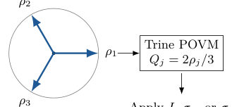
<figcaption class="paper-figure-caption"><b>Fig 1.</b> FIG. 2. Quantum and classical retained registers for the three-branch Pauli channel, with η = 0. (a) The known trine encoding and measurement [16] provide branch probabilities 2/3, 1/6, 1/6. The program of dimension two accompanies the protected qubit across the cut. (b) Exact process synthesis requires total dimension 4 for quantum programs and 6 for classical programs. The graph alone requires only 2. Open endpoints indicate the value before the next dimension step, and filled points give attained errors. No device is admissible for k &lt; 2. Common output depolarization scales the plotted errors by 1 −η. The comparison excludes free shared randomness.</figcaption>
</figure>
</div>
<p><strong>Summary.</strong> This paper rigorously analyzes the resource cost, specifically the intermediate memory dimension, required to synthesize arbitrary quantum channels. It demonstrates that the computational cost can exceed the structural cost, providing sharp bounds on quantum process simulation. This has implications for designing efficient quantum hardware components.</p>
<p><strong>Why it may be interesting.</strong> The work provides fundamental resource bounds for implementing complex quantum operations, which is crucial for designing scalable quantum hardware architectures and understanding the limits of quantum computation.</p>
<details>
<summary>Detailed structure</summary>
<p><strong>Main problem.</strong> The paper investigates the minimum total intermediate dimension required for synthesizing complex quantum channels, especially when the synthesis process involves protecting a subsystem and managing information flow through a control register.</p>
<p><strong>Main result.</strong> The required dimension for synthesis can be significantly larger (e.g., $ab$) than the dimension needed just to realize the graph structure ($b$), establishing a clear separation between graph cost and process cost.</p>
<p><strong>Method.</strong> The analysis uses graph theory applied to quantum channels, characterizing attainability via noncommutative graphs, and employing the diamond norm to quantify operational distance between target and achievable channels.</p>
<p><strong>Model / system.</strong> The model centers on quantum channels ($\Phi: M_n 	o M_k$) realized through sequential quantum devices involving an initial stage that protects a $b$-dimensional subsystem and interacts with an $a$-dimensional control register.</p>
<p><strong>Key observables.</strong> Intermediate carrier dimension ($\gamma_{int}$), minimum process cost ($m_A(N)$), and approximation error ($\varepsilon_A^k(N)$) measured in the diamond norm.</p>
<p><strong>Important parameters / regimes.</strong> Depolarization strength ($\eta$), subsystem dimensions ($a, b$), and the structure of the noncommutative graph ($S\Phi$).</p>
<p><strong>Assumptions / limitations.</strong> The analysis often assumes exact protection and graph constraints, and relies on the diamond norm for quantifying operational distance.</p>
<p><strong>Figures summary.</strong> Figure 1 illustrates the supported normal form of a sequential quantum device, showing the intermediate cut carrying the protected subsystem $F$ and the retained register $G$.</p>
<p><strong>Paper structure.</strong> The paper develops results by first establishing necessary and sufficient conditions for exact synthesis based on graph containment, then quantifying the resource cost (dimension) required for simulation, and finally analyzing the gap between quantum and classical performance under noise.</p>
</details>
<details>
<summary>Abstract</summary>
<p>A quantum memory can preserve a subsystem perfectly while discarding information needed by a later operation. We study the total intermediate dimension required for channel synthesis when the first stage protects a $b$-dimensional subsystem and has a prescribed noncommutative graph imposing full confusability on an $a$-dimensional control register. For a finite family of classically controlled branches, exact synthesis is possible if and only if the target graph contains the prescribed graph of the first stage. For every feasible family, we construct a single processor that implements all branches exactly. The processor uses pairwise nonorthogonal pure program states in a register of dimension at most $a$. A target graph may be realizable with a carrier of dimension $b$, while synthesizing a channel with that graph can require dimension $ab$. We also characterize the closure of the attainable channels, distinguishing exact synthesis from arbitrarily accurate approximation. Finally, for a family built from the trine communication task, a four-dimensional carrier permits exact synthesis with quantum programs under output depolarization. At the same total carrier dimension and without free shared randomness, classical programs have optimal normalized diamond error $(1-η)/4$, where $0\leqη\leq1$ is the depolarization strength. For $η<1$, the gap persists under sufficiently small perturbations of the target branches.</p>
</details>
<p><sub><a href="#top">↑ back to top</a></sub></p>

<p><a id="paper-2610.20591"></a></p>
<h3 id="logical-ccz-state-cultivation"><a href="http://arxiv.org/abs/2610.20591v1">Logical CCZ state cultivation</a></h3>
<p><strong>Authors:</strong> Yuta Hirasaki, Jong Yeon Lee<br>
<strong>Type:</strong> theory · <strong>Category:</strong> quantum information and computing · <strong>PDF:</strong> <a href="https://arxiv.org/pdf/2610.20591v1">https://arxiv.org/pdf/2610.20591v1</a><br>
<strong>Analysis basis:</strong> full PDF text, analyzed in chunks</p>
<div class="figure-strip-hint">↔ Scroll figures horizontally</div>
<div class="paper-figures-scroll">
<figure class="paper-figure-card">
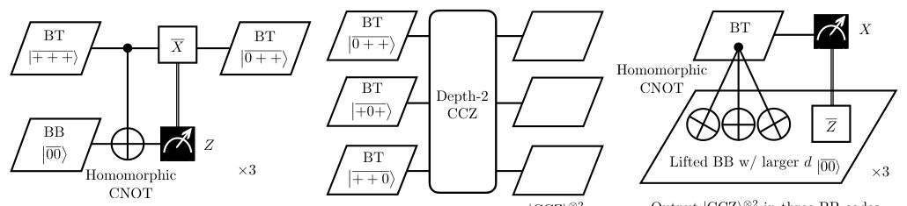
<figcaption class="paper-figure-caption"><b>Fig 1.</b> FIG. 1. Protocol overview. (a) Three BT blocks are selectively initialized in 0 + + , +0+ , and + + 0 using homomorphic measurements with index-2 lifted BB codes. (b) A depth-two cup-product circuit acting on the properly initialized BT states directly generates two disjoint logical CCZ states. (c) Homomorphic CNOTs subsequently teleport these states into three higher-distance BB blocks constructed through index-3 lifts.</figcaption>
</figure>
<figure class="paper-figure-card">
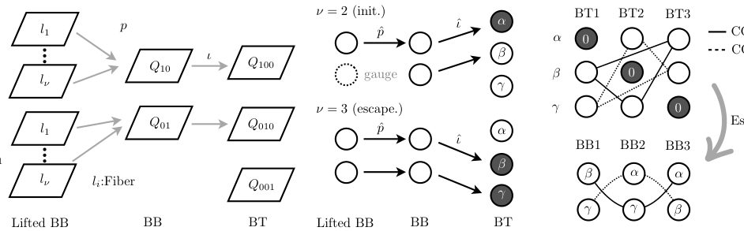
<figcaption class="paper-figure-caption"><b>Fig 2.</b> FIG. 2. Lifting-based mechanisms. The coupling among the BT code QABC • , the BB code QAB • , and the lifted BB code eQAB • is illustrated. (a) Physical coupling of the three codes. We use the shorthand notation eQij = e Ai ⊗eBj, Qij = Ai ⊗Bj, and Qijk = Ai ⊗Bj ⊗Ck. The projection p maps the ν sheets of the lifted BB code eQAB • onto the base BB code QAB • . The inclusion ι embeds its two qubit sectors into the Q100 and Q010 sectors of the BT code QABC • . Their composition f = ι ◦p specifies the homomorphic CNOT. (b) Induced logical couplings. The circles denote logical qubits, with the BT logical qubits labelled by α, β, and γ. The chosen index-2 AB lift has logical image ⟨α⟩, enabling...</figcaption>
</figure>
<figure class="paper-figure-card">
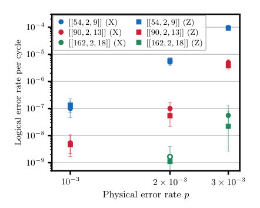
<figcaption class="paper-figure-caption"><b>Fig 3.</b> FIG. 3. Escape code memory error rate. We perform memory experiments under our noise model in both the X- basis and the Z-basis. The logical error rate per cycle is shown for the three BB codes used for escape. For J162, 2, 18K (X), no logical failure is observed at p = 2×10−3 among 108 shots, and the unfilled marker shows one-sided 95% upper limits.</figcaption>
</figure>
<figure class="paper-figure-card">
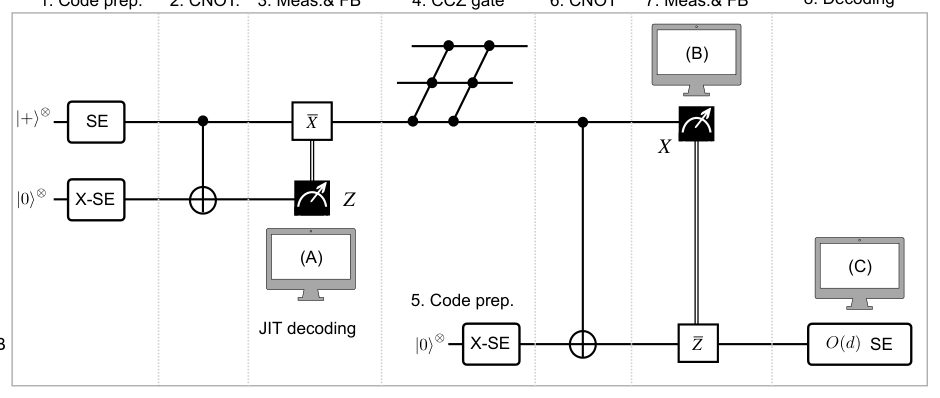
<figcaption class="paper-figure-caption"><b>Fig 4.</b> FIG. 4. CCZ factory pipeline. (1) The BT and BB codes are initialized in the logical + and 0 states, respectively. (2) A homomorphic CNOT is applied with physical depth two. (3) The BB code is measured transversally in the Z basis; the outcomes are decoded, and adaptive feedback is applied. (4) The cup-product CCZ gate is applied to the three separately prepared BT code blocks. (5) The escape BB code is prepared in the logical 0 state. (6) A homomorphic CNOT is applied with physical depth three. (7) The BT code block is measured transversally in the X basis; the outcomes are decoded, and feedback is applied. (8) O(d) rounds of syndrome extraction are performed; the outcomes are decoded, and...</figcaption>
</figure>
<figure class="paper-figure-card">
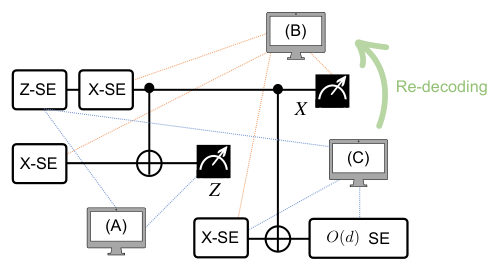
<figcaption class="paper-figure-caption"><b>Fig 5.</b> FIG. 5. Joint decoding. Homomorphic CNOTs mix the stabilizer values of the three code blocks, so decoding should be performed jointly. The dotted lines show which measure- ment outcomes are jointly decoded. The outcomes supplied to decoder (B) are re-decoded using the output of decoder (C), as indicated by the green arrow.</figcaption>
</figure>
</div>
<p><strong>Summary.</strong> This paper presents a novel, end-to-end protocol for generating logical CCZ states required for fault-tolerant quantum arithmetic. It utilizes a combination of bivariate tricycle and bicycle quantum error correcting codes to achieve this preparation efficiently. The simulation results show low error rates and a reduced resource cost compared to alternative state preparation routes.</p>
<p><strong>Why it may be interesting.</strong> The direct, resource-efficient cultivation of non-Clifford logical gates like CCZ is a major bottleneck in scaling quantum computation, making this protocol highly relevant for theorists designing fault-tolerant architectures.</p>
<details>
<summary>Detailed structure</summary>
<p><strong>Main problem.</strong> The paper addresses the need for an efficient, end-to-end protocol to directly prepare logical CCZ states, which are essential resources for implementing Toffoli gates in fault-tolerant quantum computation.</p>
<p><strong>Main result.</strong> They developed a factory using BT/BB codes that achieves low joint infidelities in simulations and demonstrates a lower estimated spacetime cost per CCZ state compared to established T-state conversion methods.</p>
<p><strong>Method.</strong> The protocol involves selective initialization using index-2 lifted BB codes, generating CCZ states via native cup-product gates, and then transferring these states to higher-distance BB memories using index-3 lifts, all enhanced by decoder-based postselection.</p>
<p><strong>Model / system.</strong> The work is based on quantum error correcting codes, specifically utilizing bivariate tricycle (BT) and bicycle (BB) codes, and engineering the logical coupling between them via projection-preserving lifts.</p>
<p><strong>Key observables.</strong> Joint infidelities (e.g., $1.84 	imes 10^{-5}$), acceptance rates (e.g., 21.94%), and the estimated spacetime cost per CCZ state.</p>
<p><strong>Important parameters / regimes.</strong> Error rates for single-qubit, CZ, and CCZ gates (0.01%, 0.1%, 0.5%); code distances ($d_f=3, 4, 5$).</p>
<p><strong>Assumptions / limitations.</strong> The protocol relies on the feasibility of projection-preserving lifts and uses decoder-based postselection to manage errors.</p>
<p><strong>Figures summary.</strong> Figure 1 illustrates the three-step process: selective initialization of BT blocks, direct CCZ state generation via cup-product, and subsequent teleportation/escape into higher-distance BB blocks.</p>
<p><strong>Paper structure.</strong> The paper details the protocol by first outlining the necessity of CCZ states, then describing the use of BT/BB codes for initialization and generation, followed by state transfer to higher-distance memories, and concluding with simulation results comparing its efficiency to T-state conversion.</p>
</details>
<details>
<summary>Abstract</summary>
<p>Logical CCZ states enable Toffoli gates, a central building block of fault-tolerant quantum arithmetic. We introduce an end-to-end protocol for direct CCZ-state preparation on bivariate tricycle and bicycle (BT/BB) codes. Our factory combines the cup-product CCZ gates native to BT codes with two novel ingredients, both enabled by engineering the logical coupling between BT and BB codes through projection-preserving lifts. Index-2 lifted BB ancillas enable selective $Z$-basis initialization, allowing the native cup-product gates to directly prepare two disjoint logical CCZ states. The prepared CCZ states are faithfully transferred to index-3 lifted BB memories with high code distance. We use decoder-based postselection to obtain high-fidelity output states with low overhead. We perform exact simulations of our factory under a circuit-level noise model motivated by neutral-atom hardware, obtaining joint infidelities of $1.84\times10^{-5}$ at $21.94\%$ acceptance and $4.10\times10^{-7}$ at $8.89\%$ acceptance for single-qubit, CZ, and CCZ error rates of $0.01\%$, $0.1\%$, and $0.5\%$, respectively. At the output-infidelity target of our smallest factory, its estimated spacetime cost per CCZ state is lower than that of $T$-state cultivation followed by CCZ conversion, providing an efficient route to logical CCZ states for fault-tolerant quantum computation.</p>
</details>
<p><sub><a href="#top">↑ back to top</a></sub></p>

<p><a id="paper-2610.19406"></a></p>
<h3 id="multiple-superconducting-phases-under-pressure-for-different-field-directions-in-ute2"><a href="http://arxiv.org/abs/2610.19406v1">Multiple Superconducting Phases under Pressure for Different Field Directions in UTe2</a></h3>
<p><strong>Authors:</strong> Dai Aoki, Atsushi Miyake, Ai Nakamura, Yoshiya Homma, Dexin Li, Shota Mizuno, Georg Knebel, Daniel Braithwaite, Jean-Pascal Brison, Jacques Flouquet<br>
<strong>Type:</strong> experiment · <strong>Category:</strong> strongly correlated electrons · <strong>PDF:</strong> <a href="https://arxiv.org/pdf/2610.19406v1">https://arxiv.org/pdf/2610.19406v1</a><br>
<strong>Analysis basis:</strong> full PDF text, analyzed in chunks</p>
<div class="figure-strip-hint">↔ Scroll figures horizontally</div>
<div class="paper-figures-scroll">
<figure class="paper-figure-card">
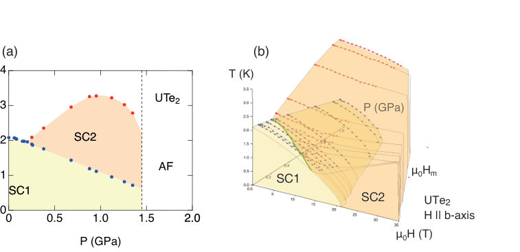
<figcaption class="paper-figure-caption"><b>Fig 1.</b> Fig. 1. (a) T–P phase diagram at zero field in UTe2 determined by the AC calorimetry measurements using a high-quality sample (Tc = 2.08 K defined by zero resistivity, the residual resistivity ratio, RRR ∼500, the scaled residual Sommerfeld coefficient, γ0/γN = 0.03). Above the critical pressure (Pc ∼1.45 GPa) [11], the antiferromagnetic state (AF) is stabilized [7,8]. (b) Semi-schematic T–P–H phase diagram for H ∥b-axis.</figcaption>
</figure>
<figure class="paper-figure-card">
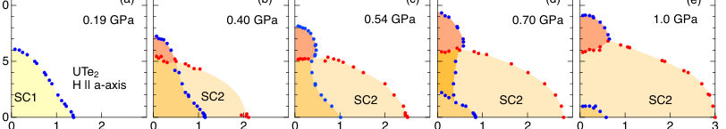
<figcaption class="paper-figure-caption"><b>Fig 2.</b> Fig. 2. H–T phase diagrams for H ∥a-axis at different pressures in UTe2. The data points are taken from our previous AC calorimetry measurements. [15]</figcaption>
</figure>
<figure class="paper-figure-card">
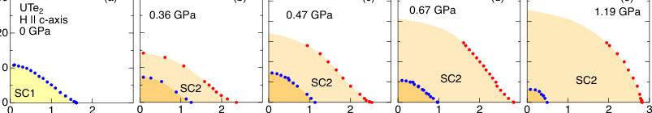
<figcaption class="paper-figure-caption"><b>Fig 3.</b> Fig. 3. H–T phase diagrams for H ∥b-axis at different pressures in UTe2. The dotted lines indicate the metamagnetic transition field Hm, estimated from Refs. 16–18. The lines are guides to the eye.</figcaption>
</figure>
<figure class="paper-figure-card">

<figcaption class="paper-figure-caption"><b>Fig 4.</b> Figure 4 shows the H–T phase diagrams at different pressures for H ∥c-axis. After Tc splits, the low-temperature transition lines associated with SC1 progressively contract with increasing pressure, as do those for H ∥b-axis. The Hc2 curves for the SC2 phase display a larger magnitude of the initial slope with increasing pressure, as also observed for H ∥b-axis. Unlike the case for H ∥b-axis, no metamagnetic transition is observed for H ∥c-axis. The SC2 phase appears to extend beyond 15 T.</figcaption>
</figure>
<figure class="paper-figure-card">
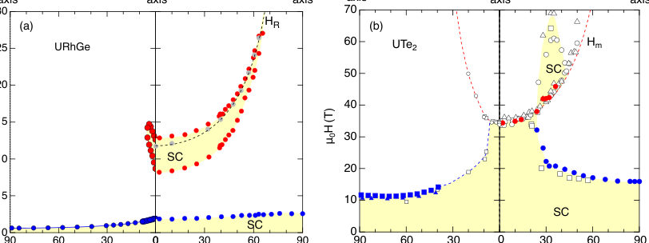
<figcaption class="paper-figure-caption"><b>Fig 5.</b> Fig. 5. Angular dependence of the superconducting critical fields in (a) URhGe and (b) UTe2. SC, HR and Hm denote superconductivity, the spin-reorientation field and the metamagnetic transition field, respectively. In URhGe, the easy-magnetization axis is the c-axis, and the hard axes correspond to the b and a-axes. In UTe2, the magnetization easy axis is the a-axis, and the hard axes correspond to the b and c axes. The high-field data in URhGe are taken from Ref. 21. The data of UTe2 are taken from Refs. 19,22,23.</figcaption>
</figure>
</div>
<p><strong>Summary.</strong> This work maps out the complex, anisotropic superconducting phase diagrams of UTe2 under applied pressure and magnetic fields. By measuring transitions along the three crystallographic axes, the authors reveal multiple superconducting phases and field-reentrant behavior. This highlights the intricate interplay between crystal structure, magnetism, and unconventional superconductivity in this material.</p>
<p><strong>Why it may be interesting.</strong> The strong coupling between magnetic anisotropy, pressure, and unconventional superconductivity in UTe2 provides a rich platform for studying emergent quantum phases in strongly correlated electron systems.</p>
<details>
<summary>Detailed structure</summary>
<p><strong>Main problem.</strong> The study investigates the existence and pressure/field dependence of multiple superconducting phases in UTe2, focusing on the anisotropy of these superconducting states.</p>
<p><strong>Main result.</strong> UTe2 exhibits highly anisotropic superconducting behavior, showing field-reentrant superconductivity favored along the hard-magnetization axes, which is linked to complex fluctuations.</p>
<p><strong>Method.</strong> The research primarily uses AC calorimetry measurements to map out field-temperature (H-T) phase diagrams under varying applied pressures.</p>
<p><strong>Model / system.</strong> The physical system is UTe2, a material known for its spin-triplet superconducting state, whose properties are modulated by external pressure and magnetic fields.</p>
<p><strong>Key observables.</strong> Superconducting transition temperatures (Tc), phase boundaries (SC1, SC2), upper critical fields (Hc2), and the anisotropy of these features with respect to crystallographic axes (a, b, c).</p>
<p><strong>Important parameters / regimes.</strong> Applied pressure (P), magnetic field strength (H), and the direction of the applied field relative to the crystal axes.</p>
<p><strong>Assumptions / limitations.</strong> The mechanism for superconductivity is noted to be more complex than in simple ferromagnetic superconductors like URhGe.</p>
<p><strong>Figures summary.</strong> The figures present H-T phase diagrams for fields applied along the a, b, and c axes at various pressures, illustrating the reentrant and anisotropic superconducting regimes.</p>
<p><strong>Paper structure.</strong> The paper systematically presents the H-T phase diagrams for the three principal field directions (a, b, c) under pressure, comparing the observed superconducting evolution to known ferromagnetic superconductors.</p>
</details>
<details>
<summary>Abstract</summary>
<p>The existence of multiple superconducting phases is a striking feature of UTe2, arising from the spin and orbital degrees of freedom and supporting a spin-triplet superconducting state. We present field-temperature phase diagrams under pressure for fields applied along the three principal crystallographic axes, as determined by AC calorimetry measurements. The pressure evolution of the multiple superconducting phases is highly anisotropic with respect to magnetic field direction, revealing rich superconducting phenomena arising from complex fluctuations.</p>
</details>
<p><sub><a href="#top">↑ back to top</a></sub></p>

<p><a id="paper-2610.19905"></a></p>
<h3 id="on-the-structure-of-low-rank-ppt-entangled-states-violating-peres-conjecture"><a href="http://arxiv.org/abs/2610.19905v1">On the structure of low-rank PPT entangled states violating Peres conjecture</a></h3>
<p><strong>Authors:</strong> Gurvir Singh, Manik Banik<br>
<strong>Type:</strong> theory · <strong>Category:</strong> quantum information and computing · <strong>PDF:</strong> <a href="https://arxiv.org/pdf/2610.19905v1">https://arxiv.org/pdf/2610.19905v1</a><br>
<strong>Analysis basis:</strong> full PDF text, analyzed in chunks</p>
<div class="figure-strip-hint">↔ Scroll figures horizontally</div>
<div class="paper-figures-scroll">
<figure class="paper-figure-card">
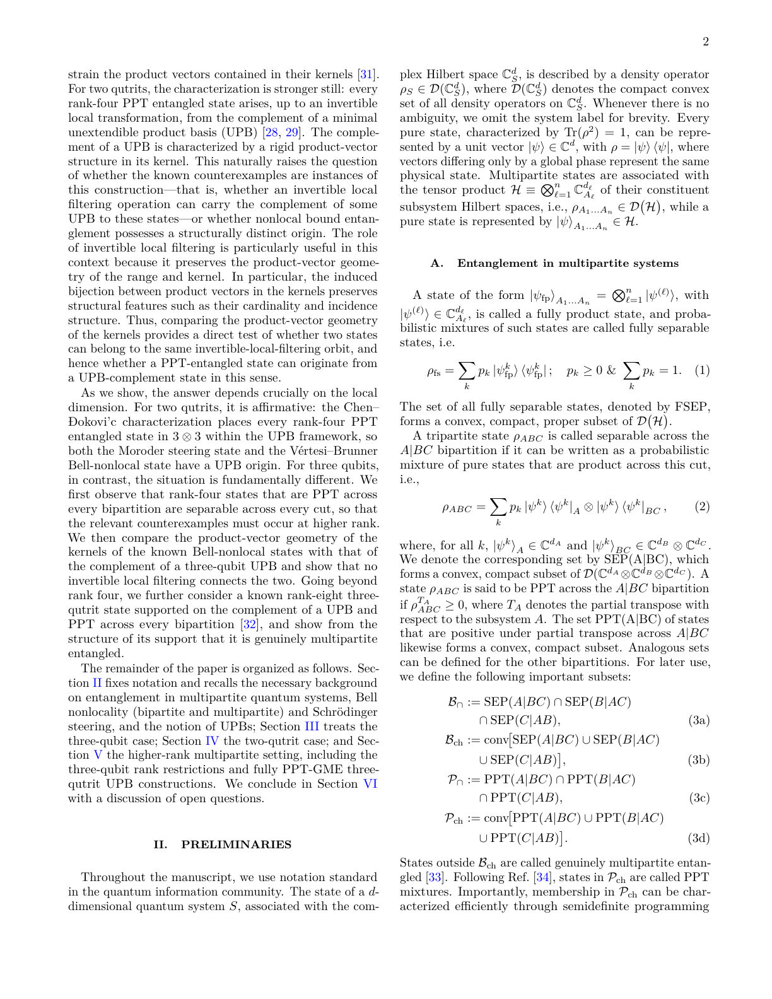
<figcaption class="paper-figure-caption"><b>Fig 1.</b> Low-resolution page preview, page 2</figcaption>
</figure>
<figure class="paper-figure-card">
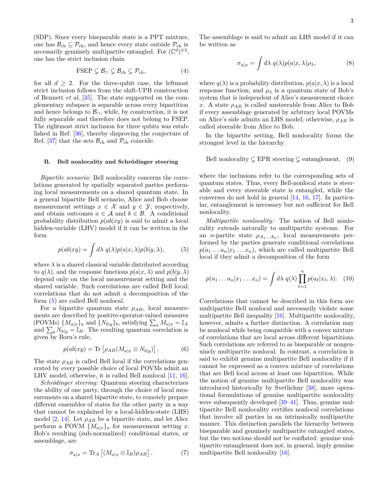
<figcaption class="paper-figure-caption"><b>Fig 2.</b> Low-resolution page preview, page 3</figcaption>
</figure>
<figure class="paper-figure-card">
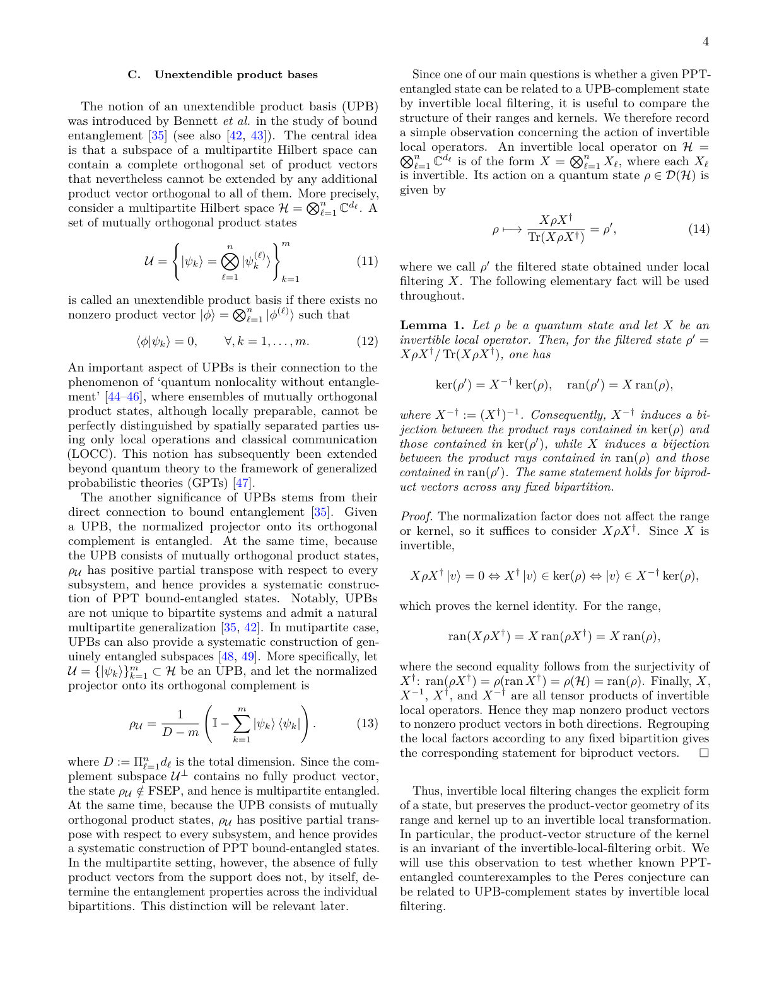
<figcaption class="paper-figure-caption"><b>Fig 3.</b> Low-resolution page preview, page 4</figcaption>
</figure>
<figure class="paper-figure-card">
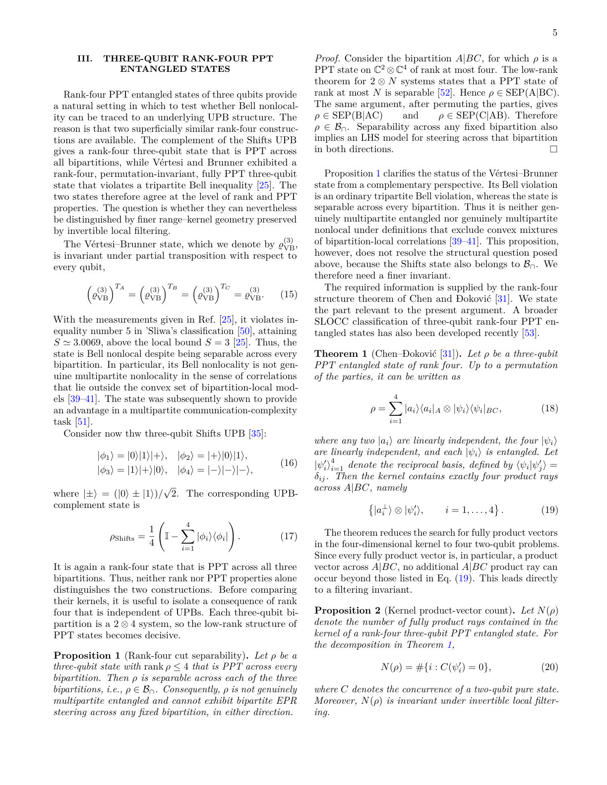
<figcaption class="paper-figure-caption"><b>Fig 4.</b> Low-resolution page preview, page 5</figcaption>
</figure>
<figure class="paper-figure-card">
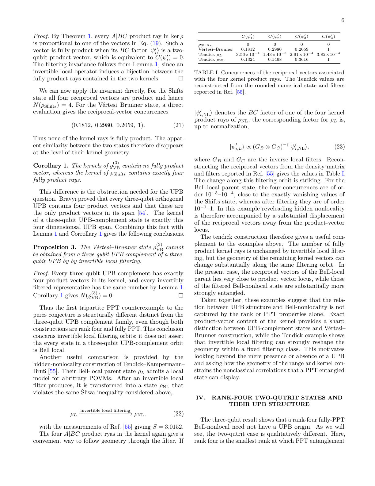
<figcaption class="paper-figure-caption"><b>Fig 5.</b> Low-resolution page preview, page 6</figcaption>
</figure>
</div>
<p><strong>Summary.</strong> This theoretical work explores the structural properties of low-rank entangled states that violate the Peres conjecture. By comparing known counterexamples to the complement of Unextendible Product Bases (UPBs), the authors show that while UPBs characterize certain states in $3\otimes3$, they do not provide a universal structural origin for all nonlocal bound entanglement in general.</p>
<p><strong>Why it may be interesting.</strong> It provides deep structural insights into the boundary between separable, bound entangled, and genuinely non-local quantum states, which is fundamental to understanding quantum correlations beyond simple entanglement measures.</p>
<details>
<summary>Detailed structure</summary>
<p><strong>Main problem.</strong> The paper investigates the structural origin of low-rank Positive Partial Transpose (PPT) entangled states that violate the Peres conjecture and exhibit quantum steering or Bell nonlocality.</p>
<p><strong>Main result.</strong> The structural origin depends on the local dimension: for $3\otimes3$, UPBs provide a unifying structure for rank-four states, but nonlocal bound entanglement is not generally a UPB phenomenon.</p>
<p><strong>Method.</strong> The authors use explicit constructions, numerical searches, and comparison of the product-vector geometry of state kernels under invertible local filtering to test structural equivalence.</p>
<p><strong>Model / system.</strong> The study focuses on multipartite quantum states, specifically in the low-rank regime, involving systems of qubits and qutrits ($d=3$). Key concepts include PPT states, Unextendible Product Bases (UPBs), and various forms of entanglement/nonlocality.</p>
<p><strong>Key observables.</strong> PPT property, quantum steering, Bell nonlocality, state rank, and structural equivalence under local filtering.</p>
<p><strong>Important parameters / regimes.</strong> Local dimension (e.g., $3\otimes3$), state rank (e.g., rank-four, rank-eight).</p>
<p><strong>Assumptions / limitations.</strong> The analysis relies on comparing states via invertible local filtering and characterizing entanglement using the UPB structure.</p>
<p><strong>Paper structure.</strong> The paper proceeds by analyzing the structural constraints imposed by the PPT condition on low-rank entangled states, contrasting results for $3\otimes3$ (where UPBs are relevant) versus three qubits (where UPB structure fails to capture all known non-local states).</p>
</details>
<details>
<summary>Abstract</summary>
<p>Bound-entangled states with positive partial transpose (PPT) can exhibit quantum steering and Bell nonlocality, disproving the long-standing Peres conjecture and its stronger steering counterpart. These counterexamples, obtained through explicit constructions or numerical searches, raise the question of whether they share a common structural origin. We address this question in the low-rank regime by asking whether known counterexamples can be obtained, up to invertible local filtering, from the complement of an unextendible product basis (UPB). We find that the answer depends crucially on the local dimension. In $3\otimes3$, the rank-four structure of PPT entangled states implies that both the steerable PPT state of Moroder \textit{et al.} and the Bell-nonlocal PPT state of Vértesi and Brunner can be obtained from UPB-complement states under invertible local filtering. For three qubits, in contrast, rank-four states that are PPT across every bipartition are separable across each cut. Moreover, comparison of the product-vector structure of the relevant kernels shows that the known three-qubit Bell-nonlocal PPT states cannot be obtained by invertible local filtering from the complement of any three-qubit UPB. Going beyond rank four, we further show that a known rank-eight three-qutrit state, supported on the complement of a UPB and PPT across every bipartition, is genuinely multipartite entangled. These results show that UPBs provide a unifying structural origin for important low-rank PPT entangled states in $3\otimes3$, but that nonlocal bound entanglement is not, in general, a UPB phenomenon.</p>
</details>
<p><sub><a href="#top">↑ back to top</a></sub></p>

<p><a id="paper-2610.20147"></a></p>
<h3 id="online-training-of-echo-state-networks-to-predict-chaotic-dynamical-systems"><a href="http://arxiv.org/abs/2610.20147v1">Online training of Echo State Networks to predict chaotic dynamical systems</a></h3>
<p><strong>Authors:</strong> Astero Provata, Markos Syroukis, Johanne Hizanidis<br>
<strong>Type:</strong> theory · <strong>Category:</strong> disordered systems and neural networks · <strong>PDF:</strong> <a href="https://arxiv.org/pdf/2610.20147v1">https://arxiv.org/pdf/2610.20147v1</a><br>
<strong>Analysis basis:</strong> full PDF text, analyzed in chunks</p>
<div class="figure-strip-hint">↔ Scroll figures horizontally</div>
<div class="paper-figures-scroll">
<figure class="paper-figure-card">
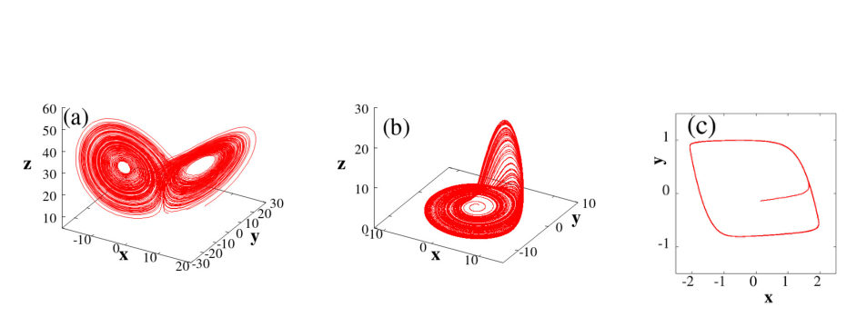
<figcaption class="paper-figure-caption"><b>Fig 1.</b> FIG. 1. (Color online) Phase space plots of: a) the 3D chaotic Lorenz attractor, b) the 3D chaotic</figcaption>
</figure>
<figure class="paper-figure-card">
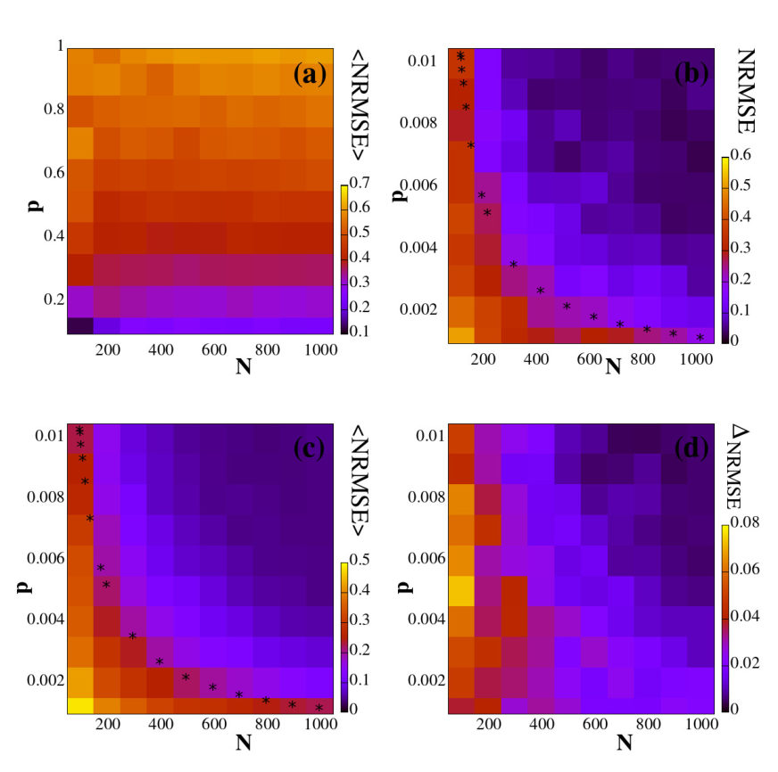
<figcaption class="paper-figure-caption"><b>Fig 2.</b> FIG. 2. Lorenz chaotic dynamics: Color-coded map of the reservoir performance (NRMSE) as</figcaption>
</figure>
<figure class="paper-figure-card">
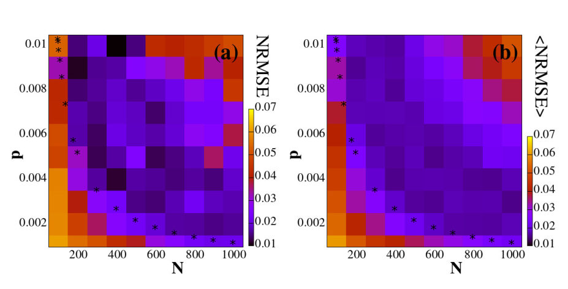
<figcaption class="paper-figure-caption"><b>Fig 3.</b> FIG. 3. R¨ossler chaotic dynamics: (a) Color-coded map of the reservoir performance, NRMSE, as</figcaption>
</figure>
<figure class="paper-figure-card">
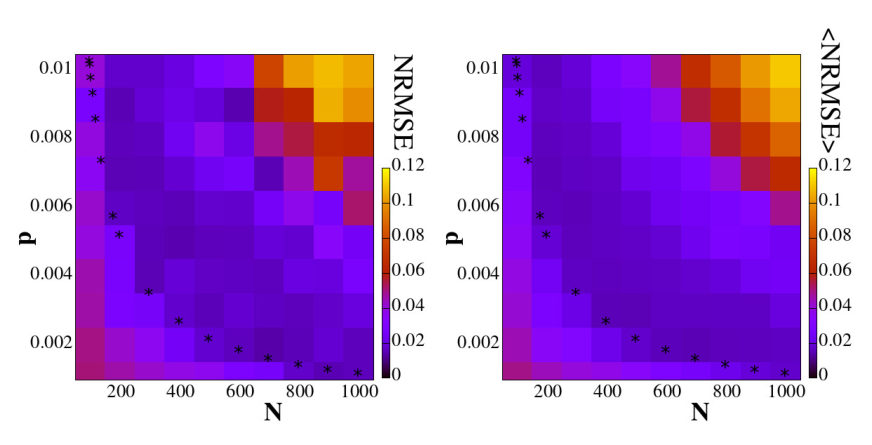
<figcaption class="paper-figure-caption"><b>Fig 4.</b> FIG. 4. FitzHugh-Nagumo limit cycle dynamics: Color-coded maps of the reservoir performance</figcaption>
</figure>
<figure class="paper-figure-card">
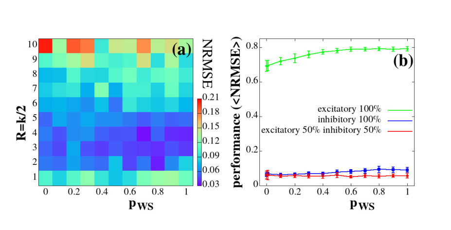
<figcaption class="paper-figure-caption"><b>Fig 5.</b> FIG. 5. (Color online) Lorenz chaotic dynamics: Color-coded map of the reservoir performance</figcaption>
</figure>
</div>
<p><strong>Summary.</strong> This paper analyzes how the underlying connectivity structure of an Echo State Network (ESN) affects its ability to predict chaotic time series. By testing random and small-world networks on models like the Lorenz attractor, the authors find that performance peaks when the network connectivity is near the bond percolation threshold. This suggests that achieving sufficient, but not excessive, structural connectivity is key for effective real-time forecasting in complex systems.</p>
<p><strong>Why it may be interesting.</strong> The application of complex network theory (percolation, small-world) to the architecture of a neural network used for modeling non-equilibrium dynamics bridges concepts relevant to disordered systems and complex dynamics.</p>
<details>
<summary>Detailed structure</summary>
<p><strong>Main problem.</strong> The study investigates how the topological structure of the reservoir network influences the learning performance of Echo State Networks (ESNs) when predicting complex, chaotic dynamical systems.</p>
<p><strong>Main result.</strong> Optimal prediction performance is achieved when the reservoir connectivity density is near or slightly above the critical point of mean-field bond percolation for random networks.</p>
<p><strong>Method.</strong> The authors employed Echo State Networks trained using online learning rules (LMS algorithm) to forecast time series data generated by classical chaotic attractors.</p>
<p><strong>Model / system.</strong> The models tested include the Lorenz and Rössler chaotic attractors, and the FitzHugh-Nagumo model operating in a limit cycle regime. The ESN structure uses reservoir connectivity derived from Erdős-Rényi and Watts &amp; Strogatz networks.</p>
<p><strong>Key observables.</strong> Normalized Root Mean Square Error (NRMSE) quantifying the prediction accuracy of the ESN.</p>
<p><strong>Important parameters / regimes.</strong> Link-density, rewiring probability ($p_{WS}$), and the proximity to the mean-field bond percolation threshold.</p>
<p><strong>Assumptions / limitations.</strong> The analysis focuses on the structural influence of the reservoir topology rather than finding absolute optimal hyperparameters, and it utilizes online training for weight updates.</p>
<p><strong>Figures summary.</strong> Figures compare NRMSE vs. training set size and vs. network parameters (like coupling range $R$ and rewiring probability $p_{WS}$) for different reservoir types predicting the Lorenz dynamics.</p>
<p><strong>Paper structure.</strong> The paper details the ESN setup, the online training procedure using the LMS rule, and then systematically tests the prediction accuracy across various chaotic models and reservoir topologies, culminating in structural conclusions regarding percolation thresholds.</p>
</details>
<details>
<summary>Abstract</summary>
<p>Echo State Networks (ESNs) are fundamentally important from the conceptual perspective of AI, because they provide simple and tractable frameworks for understanding temporal information processing, memory, and learning in dynamical systems. They are composed by an interconnected reservoir whose connectivity matrix remains constant over time and only the output weights are updated during the training period. In particular, ESNs employing online training allow the incremental adaptation of the output weights as data is received, making them particularly suitable for applications in which new input data becomes available over time (non-stationary environments). A key objective in the study of such learning structures is to determine which statistical properties of the reservoir enhance computational efficiency and maximize prediction performance. To this end, we investigate the effects of reservoir topology on learning performance, considering weight matrices generated from Erdos-Renyi random networks and Watts &amp; Strogatz small-world networks. As test data we use the Lorenz and Rossler models in the chaotic regime and the FitzHugh-Nagumo model in the limit cycle regime. In the case of random Erdos-Renyi reservoirs, our simulations show that best performances are obtained for sparse reservoirs and especially when the link-density is near and immediately above the critical point of mean-field bond percolation. Watts &amp; Strogatz reservoirs are shown to demonstrate best performance also for small values of link-density, compatible with the mean-field bond percolation when taking into account the specific nonlocal ring structure of the Watts &amp; Strogatz reservoirs. These studies on the influence of the reservoir architecture and hyperparameters on enhancing the accuracy of ESN predictions provide an efficient framework for real-time forecasting in dynamically evolving systems.</p>
</details>
<p><sub><a href="#top">↑ back to top</a></sub></p>

<p><a id="paper-2610.19459"></a></p>
<h3 id="quantum-ldpc-codes-from-polynomial-minors"><a href="http://arxiv.org/abs/2610.19459v1">Quantum LDPC Codes from Polynomial Minors</a></h3>
<p><strong>Authors:</strong> Vahid Nourozi, Roxana Smarandache, David G. M. Mitchell<br>
<strong>Type:</strong> theory · <strong>Category:</strong> quantum information and computing · <strong>PDF:</strong> <a href="https://arxiv.org/pdf/2610.19459v1">https://arxiv.org/pdf/2610.19459v1</a><br>
<strong>Analysis basis:</strong> full PDF text, analyzed in chunks</p>
<div class="figure-strip-hint">↔ Scroll figures horizontally</div>
<div class="paper-figures-scroll">
<figure class="paper-figure-card">
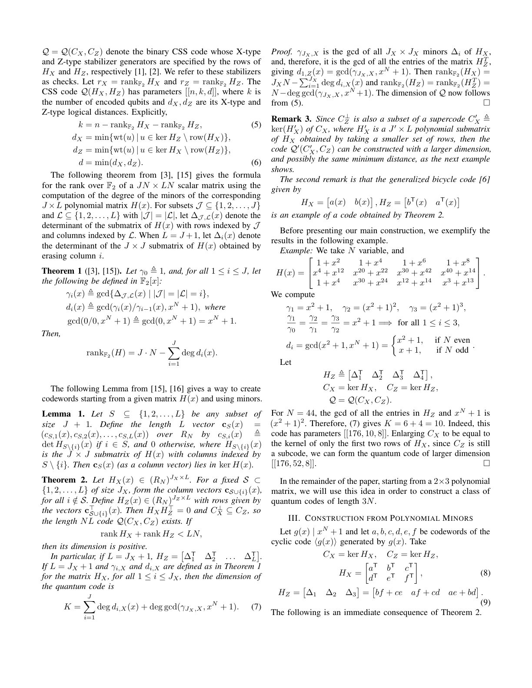
<figcaption class="paper-figure-caption"><b>Fig 1.</b> Low-resolution page preview, page 2</figcaption>
</figure>
<figure class="paper-figure-card">
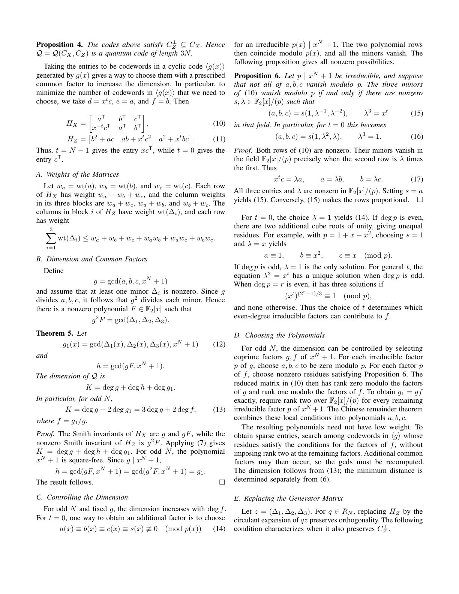
<figcaption class="paper-figure-caption"><b>Fig 2.</b> Low-resolution page preview, page 3</figcaption>
</figure>
<figure class="paper-figure-card">
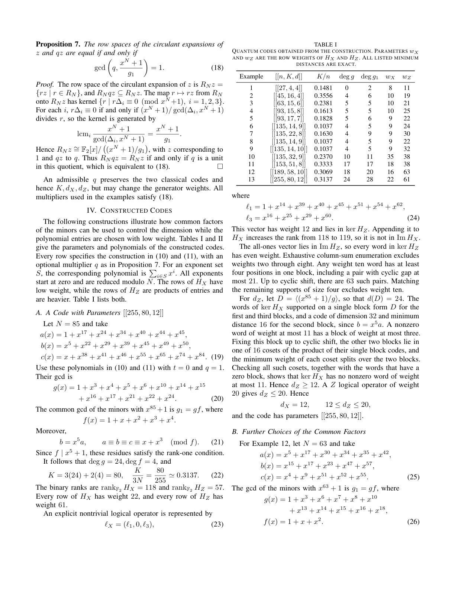
<figcaption class="paper-figure-caption"><b>Fig 3.</b> Low-resolution page preview, page 4</figcaption>
</figure>
<figure class="paper-figure-card">
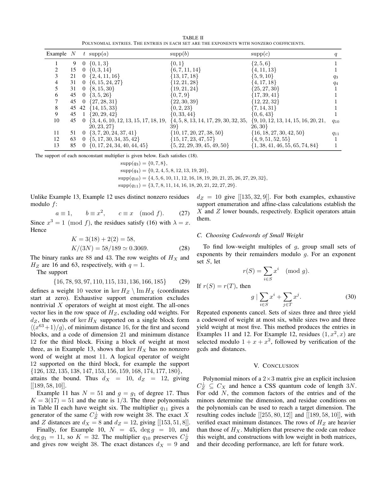
<figcaption class="paper-figure-caption"><b>Fig 4.</b> Low-resolution page preview, page 5</figcaption>
</figure>
<figure class="paper-figure-card">
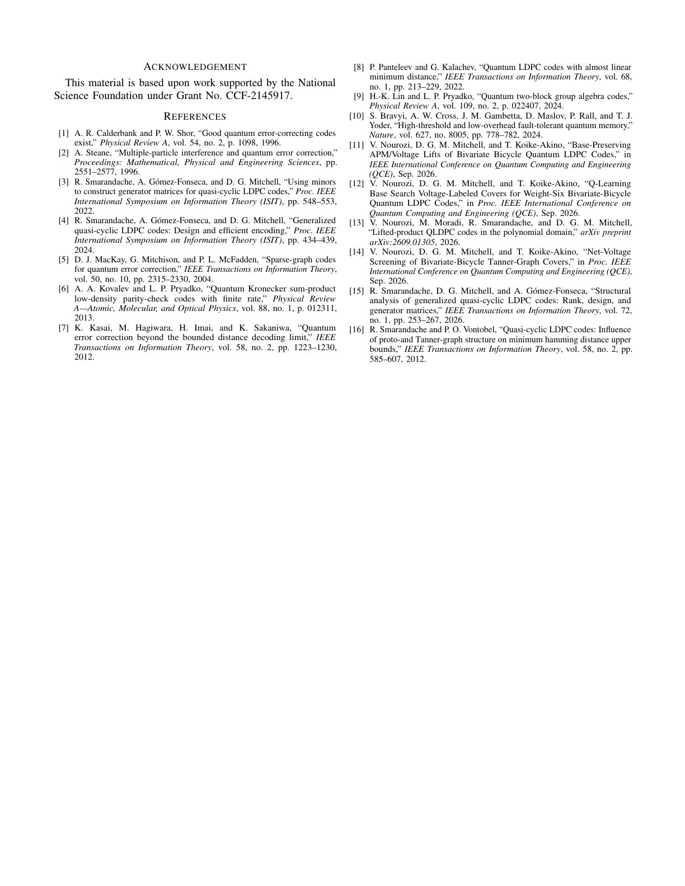
<figcaption class="paper-figure-caption"><b>Fig 5.</b> Low-resolution page preview, page 6</figcaption>
</figure>
</div>
<p><strong>Summary.</strong> This paper develops a method to construct Quantum LDPC codes by leveraging the minors of a polynomial matrix within the CSS framework. The authors derive formulas to precisely control the code dimension and provide explicit constructions, yielding codes like $[[255, 80, 12]]$. This work offers a powerful algebraic tool for designing robust quantum error correction codes.</p>
<p><strong>Why it may be interesting.</strong> The rigorous algebraic construction of quantum codes using polynomial minors provides a powerful, systematic tool for generating new, high-performance quantum error-correcting codes.</p>
<details>
<summary>Detailed structure</summary>
<p><strong>Main problem.</strong> The paper focuses on constructing quantum error-correcting codes, specifically Quantum LDPC codes, using algebraic structures derived from polynomial minors.</p>
<p><strong>Main result.</strong> The authors successfully construct explicit quantum codes, including a verified example with parameters $[[255, 80, 12]]$, by controlling the code dimension through polynomial selection.</p>
<p><strong>Method.</strong> The construction utilizes the CSS framework, generating stabilizer generators from the minors of a specialized two-row, three-column polynomial matrix $H(x)$ over $\mathbb{F}_2$.</p>
<p><strong>Model / system.</strong> The model is the quantum error-correcting code itself, defined by its stabilizer generators derived from polynomial algebra over finite fields, leading to codes of length $3N$.</p>
<p><strong>Key observables.</strong> Code parameters $[[n, k, d]]$, code dimension $k$, and minimum distance $d$.</p>
<p><strong>Important parameters / regimes.</strong> The length $n$ is $3N$, and the dimension $k$ is derived from GCDs of polynomial minors.</p>
<p><strong>Assumptions / limitations.</strong> The construction relies on the CSS orthogonality condition and specific theorems regarding the rank of matrices formed by polynomial minors.</p>
<p><strong>Figures summary.</strong> The notes mention tables listing parameters and polynomials for constructed codes, detailing row weights and minimum distances for various examples.</p>
<p><strong>Paper structure.</strong> The paper introduces the problem, details the construction using polynomial minors and the CSS condition, derives dimension formulas based on GCDs, and concludes with explicit examples and discussions on controlling parameters.</p>
</details>
<details>
<summary>Abstract</summary>
<p>We construct quantum codes from codewords of a cyclic code and the minors of a polynomial matrix. The construction uses a two-row, three-column matrix whose minors yield a second matrix satisfying the CSS orthogonality condition. We derive the code dimension from the greatest common divisors of the entries and minors, with a simplified formula for odd lifting factors. A residue characterization identifies additional common factors of the minors and leads to a method for controlling the dimension through polynomial selection. We also give a condition for changing the minor generator without changing the code. Explicit polynomial constructions yield 13 quantum codes with verified minimum distances, including a $[[255,80,12]]$ code of rate $80/255$.</p>
</details>
<p><sub><a href="#top">↑ back to top</a></sub></p>

<p><a id="paper-2610.19727"></a></p>
<h3 id="role-of-gd-5d-au-5d-hybridization-for-the-magnetic-properties-of-au-al-gd-quasicrystal-approximants"><a href="http://arxiv.org/abs/2610.19727v1">Role of Gd 5d-Au 5d hybridization for the magnetic properties of Au-Al-Gd quasicrystal approximants</a></h3>
<p><strong>Authors:</strong> Goro Nozue, Hidenori Fujiwara, Satoru Hamamoto, Yuto Torii, Mai Sakaguchi, Sho Nakajima, Takuya D. Nakamura, Nonoka U. Sakamoto, Takayuki Kiss, Masaki Oura, Akira Yasui, Kotaro Higashi, Naomi Kawamura, Kojiro Mimura, Arata Tanaka, Asuka Ishikawa, Farid Labib, Shintaro Suzuki, Takafumi D. Yamamoto, Ryuji Tamura, Akira Sekiyama<br>
<strong>Type:</strong> experiment · <strong>Category:</strong> strongly correlated electrons · <strong>PDF:</strong> <a href="https://arxiv.org/pdf/2610.19727v1">https://arxiv.org/pdf/2610.19727v1</a><br>
<strong>Analysis basis:</strong> full PDF text, analyzed in chunks</p>
<div class="figure-strip-hint">↔ Scroll figures horizontally</div>
<div class="paper-figures-scroll">
<figure class="paper-figure-card">
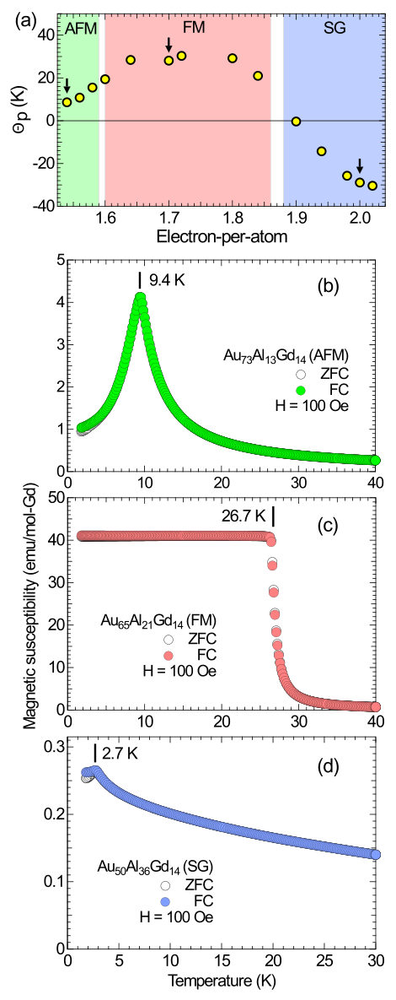
<figcaption class="paper-figure-caption"><b>Fig 1.</b> FIG. 1. (a) e/a-ratio dependence of the Curie-Weiss tem- perature Θp of the Au-Al-Gd ACs [7, 9–11]. The arrows show the e/a-ratio values of each Au-Al-Gd AC employed in this study. (b), (c), (d) Temperature dependence of the field cooling (FC) and zero-field cooling (ZFC) magnetic suscep- tibility of Au73Al13Gd14 (AFM), Au65Al21Gd14 (FM), and Au50Al36Gd14 (SG), respectively. The solid lines indicate the magnetic transition temperatures.</figcaption>
</figure>
<figure class="paper-figure-card">
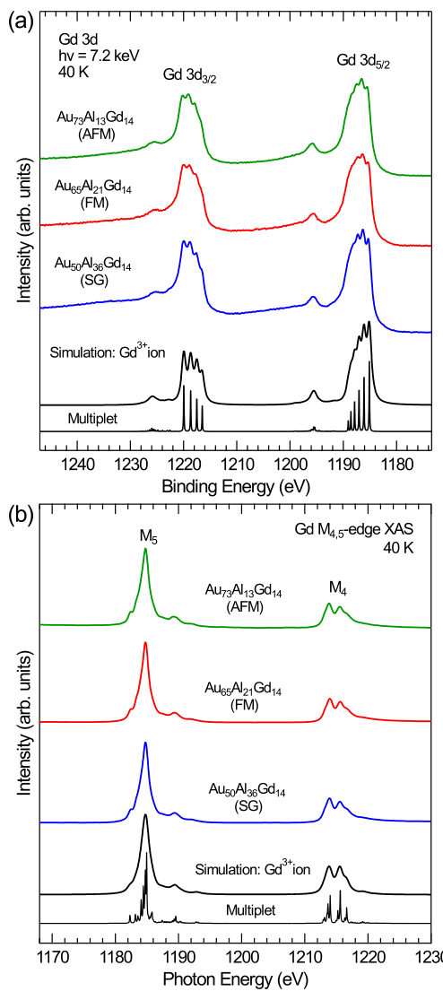
<figcaption class="paper-figure-caption"><b>Fig 2.</b> FIG. 2. (a) Gd 3d core-level HAXPES and (b) Gd M4,5- edge XAS spectra of Au73Al13Gd14 (AFM), Au65Al21Gd14 (FM), and Au50Al36Gd14 (SG), compared with the simulated spectra for the Gd3+ ion and the corresponding final-state multiplet structures, 3d94f 7 for (a) and 3d94f 8 for (b).</figcaption>
</figure>
<figure class="paper-figure-card">
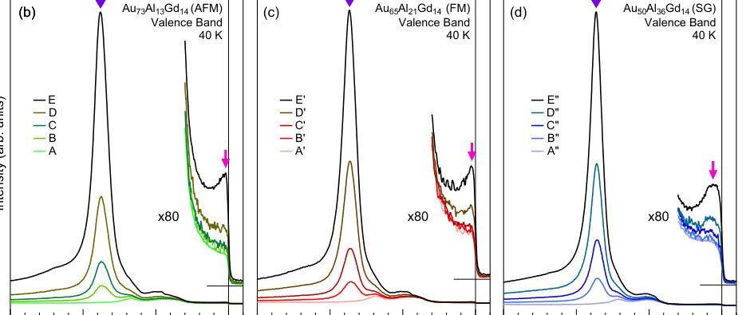
<figcaption class="paper-figure-caption"><b>Fig 3.</b> FIG. 3. (a) Gd M5-edge XAS spectra of Au73Al13Gd14 (AFM), Au65Al21Gd14 (FM), and Au50Al36Gd14 (SG). The vertical bars indicate the selected photon energy for the Gd 3d-edge RPES of the Au-Al-Gd ACs. (b), (c), (d) Gd 3d-edge RPES spectra of Au73Al13Gd14 (AFM), Au65Al21Gd14 (FM), and Au50Al36Gd14 (SG), respectively. The triangles indicate the 4f 6</figcaption>
</figure>
<figure class="paper-figure-card">
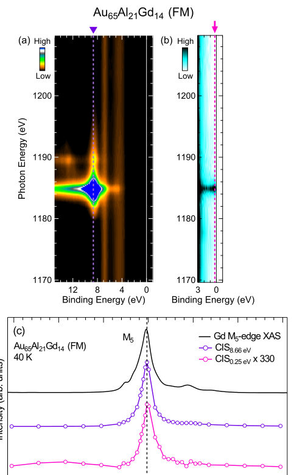
<figcaption class="paper-figure-caption"><b>Fig 4.</b> FIG. 4. (a) Intensity map for the Gd 3d-edge RPES spectra of Au65Al21Gd14 (FM). The triangle shows the peak binding en- ergy of the 4f 6 final-state multiplet structures. (b) Enlarged view of the intensity map for the Gd 3d-edge RPES spectra of Au65Al21Gd14 (FM) around EF . The downward arrow in- dicates the binding energy of the resonant peak structure in the vicinity of EF . In (a) and (b), the spectral intensity has been linearly interpolated with respect to the photon energy. (c) CIS spectra at 8.66 and 0.25 eV in the Gd 3d-edge RPES spectra of Au65Al21Gd14 (FM) in comparison with the Gd M5-edge XAS spectrum.</figcaption>
</figure>
<figure class="paper-figure-card">
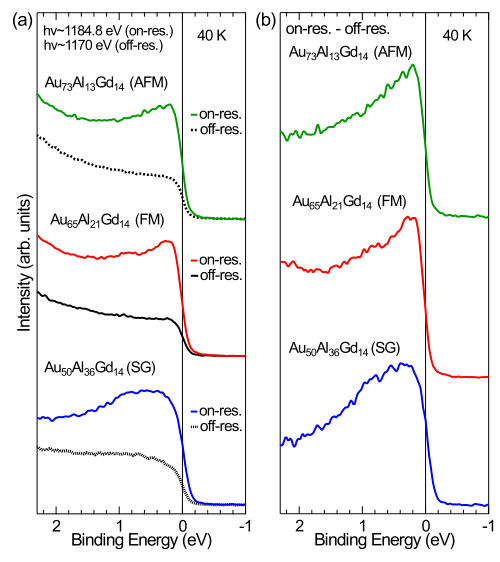
<figcaption class="paper-figure-caption"><b>Fig 5.</b> FIG. 5. (a) Enlarged view of the on-res. and off-res. spec- tra of Au73Al13Gd14 (AFM), Au65Al21Gd14 (FM), and Au50Al36Gd14 (SG) around EF . (b) Difference spectra (on- res. spectrum −off-res. spectrum) of Au73Al13Gd14 (AFM), Au65Al21Gd14 (FM), and Au50Al36Gd14 (SG).</figcaption>
</figure>
</div>
<p><strong>Summary.</strong> This work uses advanced x-ray spectroscopy to investigate the electronic structure of Au-Al-Gd quasicrystal approximants exhibiting different magnetic states. The key finding is that the magnetic behavior is dictated by the hybridization between Gd 5d and Au 5d orbitals near the Fermi level. This provides a detailed, orbital-resolved picture of the magnetic exchange interaction in these rare-earth-based quasicrystals.</p>
<p><strong>Why it may be interesting.</strong> The detailed orbital-resolved spectroscopy provides a direct, microscopic link between hybridization mechanisms (Gd 5d-Au 5d) and macroscopic magnetic ordering in complex, quasiperiodic materials.</p>
<details>
<summary>Detailed structure</summary>
<p><strong>Main problem.</strong> To understand the relationship between the valence electronic states and the magnetic properties of Au-Al-Gd quasicrystal approximants, specifically elucidating the mechanism of intersite exchange interaction between localized Gd 4f electrons.</p>
<p><strong>Main result.</strong> The magnetic properties are governed by hybridization between the Gd 5d and Au 5d states near the Fermi level, and the strength of this hybridization varies significantly depending on the magnetic ground state (AFM, FM, or SG).</p>
<p><strong>Method.</strong> The study employed orbital-selective soft and hard x-ray electron spectroscopies (HAXPES, XAS, RPES) performed in the paramagnetic phase to probe the electronic structure.</p>
<p><strong>Model / system.</strong> The physical system is the Au-Al-Gd quasicrystal approximants (ACs), which exhibit distinct magnetic ground states (AFM, FM, SG) correlated with the electron-per-atom ratio.</p>
<p><strong>Key observables.</strong> Valence electronic states, hybridization strength between Gd 5d and Au 5d states, and the magnetic ground state (AFM, FM, SG).</p>
<p><strong>Important parameters / regimes.</strong> The electron-per-atom ratio (e/a) and the specific chemical composition of the approximants.</p>
<p><strong>Assumptions / limitations.</strong> The analysis assumes that the observed hybridization provides a microscopic pathway for the intersite exchange interaction, moving beyond models relying solely on the Fermi wavenumber.</p>
<p><strong>Figures summary.</strong> Figures illustrate the dependence of magnetic properties on the e/a ratio, and show core-level XAS and photoemission spectra for the three magnetic phases, confirming localized Gd 4f states.</p>
<p><strong>Paper structure.</strong> The paper systematically analyzes the electronic structure using multiple spectroscopic techniques to correlate the observed valence state variations (especially Gd 5d-Au 5d hybridization) with the established magnetic ground states across different compositions.</p>
</details>
<details>
<summary>Abstract</summary>
<p>We have studied the electronic states of magnetic Au-Al-Gd quasicrystal approximants, which exhibit different magnetic ground states at low temperatures, by orbital-selective soft and hard x-ray electron spectroscopies in the paramagnetic phase. Our results reveal that the valence electronic states vary among the Au-Al-Gd approximants with different magnetic ground states, whereas the Gd 4f electrons are localized in all of them. In particular, we find that the Gd 5d states are hybridized with the Au 5d states around the Fermi level, providing information about a local pathway for the intersite exchange interaction between the localized Gd 4f electrons. This hybridization strength varies among these samples. Our findings bring an orbital-resolved microscopic picture to the magnetism of rare-earth-based quasicrystals and approximants.</p>
</details>
<p><sub><a href="#top">↑ back to top</a></sub></p>

<p><a id="paper-2610.18955"></a></p>
<h3 id="stabilizer-renyi-entropy-without-a-phase-reference"><a href="http://arxiv.org/abs/2610.18955v1">Stabilizer Rényi Entropy Without a Phase Reference</a></h3>
<p><strong>Authors:</strong> Jinwei Chu, Savan Kharel<br>
<strong>Type:</strong> theory · <strong>Category:</strong> quantum information and computing · <strong>PDF:</strong> <a href="https://arxiv.org/pdf/2610.18955v1">https://arxiv.org/pdf/2610.18955v1</a><br>
<strong>Analysis basis:</strong> full PDF text, analyzed in chunks</p>
<div class="figure-strip-hint">↔ Scroll figures horizontally</div>
<div class="paper-figures-scroll">
<figure class="paper-figure-card">
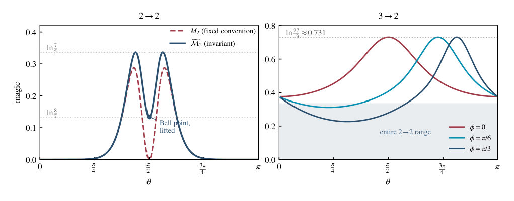
<figcaption class="paper-figure-caption"><b>Fig 1.</b> FIG. 1. The invariant at work in gluon scattering. Left: 2 →2. The bare SRE M2 in a fixed phase convention (dashed) vanishes at θ = π/2, where the final state is a Bell state [6]; the invariant f M2 (solid) lifts it to ln 8</figcaption>
</figure>
<figure class="paper-figure-card">
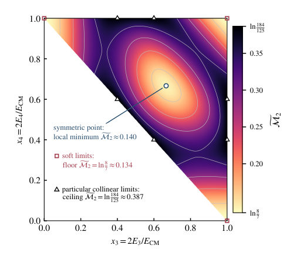
<figcaption class="paper-figure-caption"><b>Fig 2.</b> FIG. 2. The soft floor and collinear ceiling of three-qubit gluon magic from 2 →3 scattering: the invariant over the Dalitz plane of outgoing energy fractions, from Eqs. (4) and (8). At the vertices one gluon is soft: the state degenerates to a single equatorial qubit carried by that gluon, and the invariant approaches its floor ln 8</figcaption>
</figure>
</div>
<p><strong>Summary.</strong> This work introduces a phase-invariant Stabilizer Rényi Entropy to quantify 'magic' in quantum states, particularly relevant when the underlying Pauli reference frame is ambiguous. By averaging over unresolved phases, the authors derive a robust measure that is applied to gluon scattering amplitudes. This invariant successfully predicts and saturates theoretical bounds in these complex physical systems.</p>
<p><strong>Why it may be interesting.</strong> It provides a powerful, physically motivated diagnostic tool for quantifying quantum resources (magic) in high-energy physics processes where phase information is ambiguous, connecting quantum information theory to QCD calculations.</p>
<details>
<summary>Detailed structure</summary>
<p><strong>Main problem.</strong> The paper defines and calculates a phase-invariant measure of 'magic'—a resource quantifying the deviation from stabilizer states—when the Pauli frame is only partially specified due to unresolved relative phases.</p>
<p><strong>Main result.</strong> The phase-averaged Stabilizer Rényi Entropy ($f_{M_2}$) is shown to be invariant under local rephasings and saturates theoretical ceilings in applications like tree-level gluon scattering, independent of external color choices.</p>
<p><strong>Method.</strong> A novel phase-invariant entropy is constructed by averaging Pauli moments over unresolved phases <em>before</em> taking the logarithm, allowing for a closed-form calculation based only on basis-state probabilities.</p>
<p><strong>Model / system.</strong> The primary application is to tree-level gluon scattering processes (e.g., $2 	o 2$ and $3 	o 2$), where the helicity states define the qubits and the basis phases are unspecified.</p>
<p><strong>Key observables.</strong> The phase-averaged Stabilizer Rényi Entropy ($f_{M_2}$), which vanishes if and only if the state is a stabilizer state in every phase convention.</p>
<p><strong>Important parameters / regimes.</strong> The number of channels ($n$), which dictates theoretical ceilings, such as $\ln[n^{3}/(6n-5)]$ for $n\geq3$.</p>
<p><strong>Assumptions / limitations.</strong> The analysis relies on the assumption that the state can be characterized by its basis-state probabilities for a broad class of sparse supports.</p>
<p><strong>Figures summary.</strong> Figures illustrate the invariant SRE over the Dalitz plane for $2 	o 3$ scattering, showing the soft floor ($\ln 8/7$) and the collinear ceiling ($\ln 184/125$), and comparing the invariant to the bare SRE for $2 	o 2$ scattering.</p>
<p><strong>Paper structure.</strong> The paper introduces the concept of phase-invariant entropy, derives its properties (invariance, closed form), and then applies it systematically to calculate and compare results for specific scattering processes ($2 	o 2$ and $3 	o 2$).</p>
</details>
<details>
<summary>Abstract</summary>
<p>Stabilizer Rényi entropy quantifies magic relative to a complete Pauli frame. In settings such as helicity states of massless particles, unsynchronized qubit registers, energy eigenbases, and systems under superselection rules, the computational basis may be fixed while the transverse Pauli axes remain unspecified. The stabilizer Rényi entropy then depends on the choice of those axes. We define a phase-averaged stabilizer Rényi entropy by averaging the Pauli moments before taking the logarithm. It is exactly invariant under independent local rephasings. For pure states, it vanishes precisely when the state is a stabilizer state in every phase convention. For a broad class of sparse supports, it reduces to a closed-form function of the basis-state probabilities alone. Within this class, the ceiling for $n$ channels is $\ln[n^{3}/(6n-5)]$ for $n\geq3$ and $\ln\frac{7}{5}$ for two channels. We apply the invariant to tree-level gluon scattering at four and five points, where the helicity-basis phases are unspecified. It saturates the two- and three-channel ceilings: $\ln\frac{7}{5}$ at four points and $\ln\frac{27}{13}$ in $3\to2$ scattering. In same-helicity $2\to3$ scattering, it lies between a floor of $\ln\frac{8}{7}$ and a ceiling of $\ln\frac{184}{125}$, reached in the resolved soft limit and particular collinear limits, respectively. In every configuration studied, the invariant is independent of the fixed external colors.</p>
</details>
<p><sub><a href="#top">↑ back to top</a></sub></p>

<p><a id="paper-2610.20078"></a></p>
<h3 id="strong-subadditivity-of-topological-entropy-on-the-torus-renyi-order-and-non-abelian-structure"><a href="http://arxiv.org/abs/2610.20078v1">Strong subadditivity of topological entropy on the torus: Rényi order and non-Abelian structure</a></h3>
<p><strong>Authors:</strong> Yi Liang<br>
<strong>Type:</strong> theory · <strong>Category:</strong> other · <strong>PDF:</strong> <a href="https://arxiv.org/pdf/2610.20078v1">https://arxiv.org/pdf/2610.20078v1</a><br>
<strong>Analysis basis:</strong> full PDF text, analyzed in chunks</p>
<div class="figure-strip-hint">↔ Scroll figures horizontally</div>
<div class="paper-figures-scroll">
<figure class="paper-figure-card">
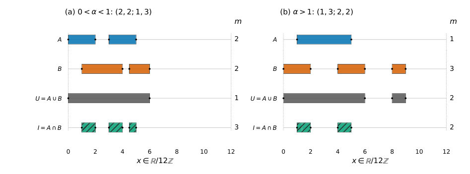
<figcaption class="paper-figure-caption"><b>Fig 1.</b> Figure 1. Parallel-annulus configurations on the torus. Each strip represents the product of a closed transverse interval in R/12Z with the longitudinal circle S1. Rows show the input regions A, B, their union U, and their intersection I, with the respective annulus counts mR indicated on the right. The boundary circles of A and B are pairwise disjoint, although the regions overlap. Configuration (a) has counts (2, 2; 1, 3) and isolates minus the second difference of Fα, as in equation (31). Configuration (b) has counts (1, 3; 2, 2) and isolates plus the same second difference, as in equation (33). The boundary terms cancel in both cases. When occupied sectors have different quantum...</figcaption>
</figure>
</div>
<p><strong>Summary.</strong> This theoretical paper investigates the strong subadditivity property for a topological entanglement entropy functional defined on a torus within TQFT. It establishes that this property holds universally only at the von Neumann order ($\alpha=1$). For other orders, the validity of the inequality is strictly constrained by algebraic properties of the underlying quantum system, such as whether the anyon types have unit quantum dimension.</p>
<p><strong>Why it may be interesting.</strong> The rigorous mathematical classification of entanglement inequalities based on the underlying algebraic structure (modular tensor category) provides deep insights into the nature of quantum correlations beyond standard thermal or geometric considerations.</p>
<details>
<summary>Detailed structure</summary>
<p><strong>Main problem.</strong> The paper classifies the conditions under which the canonical topological Rényi functional exhibits strong subadditivity on an unpunctured torus, and how this depends on the Rényi order ($\alpha$).</p>
<p><strong>Main result.</strong> Strong subadditivity holds universally at the von Neumann order ($\alpha=1$), but for $0 < \alpha < 1$, it is equivalent to the underlying modular tensor category being pointed.</p>
<p><strong>Method.</strong> The analysis uses replica constructions, Mayer-Vietoris surface constraints, and comparisons to established entropy inequalities to derive necessary and sufficient conditions for the subadditivity to hold.</p>
<p><strong>Model / system.</strong> The theory is set within the framework of Topological Quantum Field Theory (TQFT) associated with a finite unitary modular tensor category ($\mathcal{C}$), applied to entanglement on an unpunctured torus ($T^2$).</p>
<p><strong>Key observables.</strong> Topological Rényi functional ($    ext{Stop}_\alpha$), quantum dimensions ($d_a$) of simple anyons, and the strong subadditivity inequality itself.</p>
<p><strong>Important parameters / regimes.</strong> The Rényi order $\alpha$, which dictates the mathematical constraints; the structure of the modular tensor category $\mathcal{C}$.</p>
<p><strong>Assumptions / limitations.</strong> The analysis initially focuses on pure ground states, though it extends the result to arbitrary logical density matrices using the boundary-charge cutting prescription.</p>
<p><strong>Figures summary.</strong> Not specified in the notes, but the structure suggests derivations involving topological constraints on subsurfaces (e.g., annuli on the torus).</p>
<p><strong>Paper structure.</strong> The paper develops by defining the functional, proving the $\alpha=1$ case, classifying the general $\alpha$-dependence (linking it to pointedness for $0 < \alpha < 1$), and finally extending the results to mixed states.</p>
</details>
<details>
<summary>Abstract</summary>
<p>We classify strong subadditivity for the canonical topological Rényi functional at finite positive orders on an unpunctured torus in the topological quantum field theory of any finite unitary modular tensor category. Universal validity means validity for all pure ground states and all regular region pairs with transverse or disjoint boundaries and compatible corner rounding. At von Neumann order one, the inequality holds universally. For each fixed order strictly between zero and one, universal validity is equivalent to pointedness, meaning that every simple anyon type has quantum dimension one. For every nonpointed category and each finite positive order other than one, we construct a violating pure state and an allowed pair. For a fixed pointed category and fixed order above one, universal validity is equivalent to a same-order modular Fourier entropy bound for every pure state. Global homological constraints on actual unions and intersections and established weighted modular uncertainty prove the order-one theorem. For parallel annuli at fixed flux distribution, the order-one functional is affine in their positive count. At other orders, unequal quantum dimensions on the occupied support induce strict curvature that suitable overlapping regions convert into negative deficits. Under the boundary-charge cutting prescription, the von Neumann theorem extends to arbitrary logical density matrices in the same ground space.</p>
</details>
<p><sub><a href="#top">↑ back to top</a></sub></p>

<p><a id="paper-2610.19962"></a></p>
<h3 id="testing-graph-isomorphism-using-simple-quantum-circuits"><a href="http://arxiv.org/abs/2610.19962v1">Testing graph isomorphism using simple quantum circuits</a></h3>
<p><strong>Authors:</strong> Samuel Beasley, Ashley Montanaro<br>
<strong>Type:</strong> theory · <strong>Category:</strong> quantum information and computing · <strong>PDF:</strong> <a href="https://arxiv.org/pdf/2610.19962v1">https://arxiv.org/pdf/2610.19962v1</a><br>
<strong>Analysis basis:</strong> full PDF text, analyzed in chunks</p>
<div class="figure-strip-hint">↔ Scroll figures horizontally</div>
<div class="paper-figures-scroll">
<figure class="paper-figure-card">
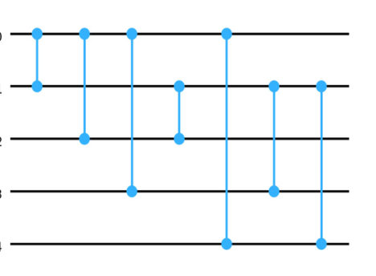
<figcaption class="paper-figure-caption"><b>Fig 1.</b> Figure 1: Simple example of equivalence between graphs and IQP circuits</figcaption>
</figure>
<figure class="paper-figure-card">
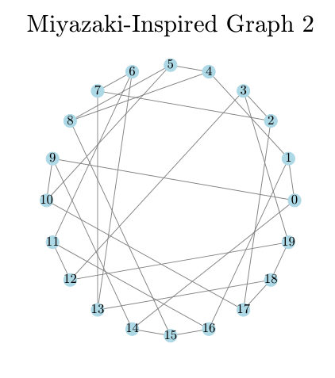
<figcaption class="paper-figure-caption"><b>Fig 2.</b> Figure 2: Two Miyazaki-inspired graphs.</figcaption>
</figure>
<figure class="paper-figure-card">
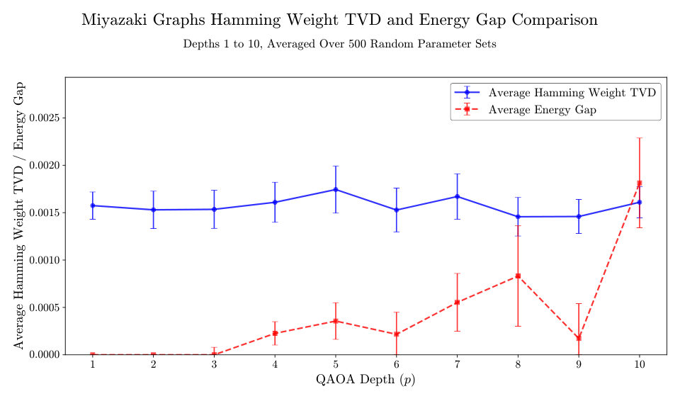
<figcaption class="paper-figure-caption"><b>Fig 3.</b> Figure 3: Comparison of Hamming weight TVD and energy gap for both Miyazaki-inspired graphs.</figcaption>
</figure>
<figure class="paper-figure-card">
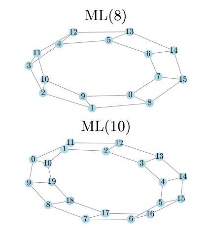
<figcaption class="paper-figure-caption"><b>Fig 4.</b> Figure 4: Circular and M¨obius ladder graphs with 16 and 20 vertices.</figcaption>
</figure>
<figure class="paper-figure-card">
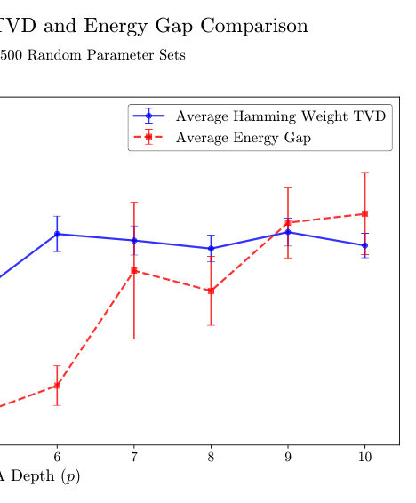
<figcaption class="paper-figure-caption"><b>Fig 5.</b> Figure 5: Comparison of Hamming weight TVD and energy gap for CL(8) and ML(8).</figcaption>
</figure>
</div>
<p><strong>Summary.</strong> This paper investigates using quantum circuits (IQP and QAOA) to solve the graph isomorphism problem by encoding graph structure into the circuit's output probability distributions. The authors derive several graph invariants, such as probability multiplicities, which successfully distinguish non-isomorphic graphs in numerical tests. While showing that the information is encoded, they leave open whether this distinction can be achieved efficiently for general graphs.</p>
<p><strong>Why it may be interesting.</strong> This work explores using quantum computational primitives to solve a fundamental, classically hard problem, providing theoretical insights into how structural information can be imprinted onto quantum state statistics.</p>
<details>
<summary>Detailed structure</summary>
<p><strong>Main problem.</strong> The paper addresses the graph isomorphism problem, which is computationally hard, by investigating whether quantum circuits can distinguish non-isomorphic graphs.</p>
<p><strong>Main result.</strong> The authors demonstrate that both IQP and QAOA circuits encode substantial structural information, with derived invariants (like probability multiplicities) successfully distinguishing numerous non-isomorphic graph pairs tested numerically.</p>
<p><strong>Method.</strong> They encode graph structure into the unitary evolution of quantum circuits (IQP and QAOA) and then analyze various output statistics, including Hamming weight distributions and correlation spectra, to find graph invariants.</p>
<p><strong>Model / system.</strong> The model uses two types of quantum circuits: Instantaneous Quantum Polynomial-time (IQP) circuits and Quantum Approximate Optimization Algorithm (QAOA) circuits. These circuits are constructed to depend on the adjacency structure of a graph $G=(V, E)$.</p>
<p><strong>Key observables.</strong> Hamming weight distributions, matrix of ZZ correlators, probability multiplicities within Hamming weight sectors, and the expectation value of the QAOA cost Hamiltonian.</p>
<p><strong>Important parameters / regimes.</strong> QAOA depth $p=2$, IQP angles $   heta=\pi/2$ and $   heta=\pi/4$, and the circuit parameters $(eta, \gamma)$ for QAOA.</p>
<p><strong>Assumptions / limitations.</strong> The analysis relies on the assumption that the quantum circuits faithfully encode graph structure, and that specific invariants derived from the output distributions are sufficient to distinguish non-isomorphic graphs.</p>
<p><strong>Figures summary.</strong> Figure 1 illustrates a simple example demonstrating the equivalence between graphs and IQP circuits.</p>
<p><strong>Paper structure.</strong> The paper establishes the computational problem (graph isomorphism), details the quantum encoding using IQP and QAOA, develops various graph invariants from the output distributions (Hamming weights, correlators, multiplicities), and concludes by showing that these invariants can distinguish non-isomorphic pairs, while noting the open question of efficient extraction.</p>
</details>
<details>
<summary>Abstract</summary>
<p>The graph isomorphism problem asks whether two graphs are equivalent up to a permutation of their vertices. Its precise computational complexity remains unresolved, and it is still unknown whether a polynomial-time algorithm exists. We investigate whether simple graph-dependent Instantaneous Quantum Polynomial-time (IQP) and Quantum Approximate Optimisation Algorithm (QAOA) circuits can distinguish non-isomorphic graphs. We first show that suitable IQP and QAOA constructions allow the underlying graph to be reconstructed using a polynomial number of samples. Building on previous work using the QAOA energy, we show that Hamming weight distributions can distinguish graph pairs at circuit depths for which the numerically computed energy gap is zero. We then apply graph invariants to the matrix of ZZ correlators on the output distribution. For the specific case of the graph spectrum, at QAOA depth $p=2$, this invariant numerically distinguishes all $10{,}486$ cospectral regular graph pairs tested on up to 18 vertices. For IQP circuits, we introduce a finer invariant based on probability multiplicities within Hamming weight sectors, which distinguishes every non-isomorphic graph pair tested numerically. Finally, we derive exact graph-theoretic characterisations of the IQP output distribution at $θ=π/2$ and $θ=π/4$. These results show that simple graph-dependent quantum circuits encode substantial structural information, while leaving open whether this information can be extracted efficiently for general graph isomorphism.</p>
</details>
<p><sub><a href="#top">↑ back to top</a></sub></p>

<p><a id="paper-2610.19054"></a></p>
<h3 id="the-generalized-beads-representation-an-informationally-complete-visualization-of-mixed-quantum-states"><a href="http://arxiv.org/abs/2610.19054v1">The Generalized BEADS Representation: An Informationally Complete Visualization of Mixed Quantum States</a></h3>
<p><strong>Authors:</strong> Celina Bräutigam, Steffen J. Glaser, Dennis Huber<br>
<strong>Type:</strong> theory · <strong>Category:</strong> quantum information and computing · <strong>PDF:</strong> <a href="https://arxiv.org/pdf/2610.19054v1">https://arxiv.org/pdf/2610.19054v1</a><br>
<strong>Analysis basis:</strong> full PDF text, analyzed in chunks</p>
<div class="figure-strip-hint">↔ Scroll figures horizontally</div>
<div class="paper-figures-scroll">
<figure class="paper-figure-card">
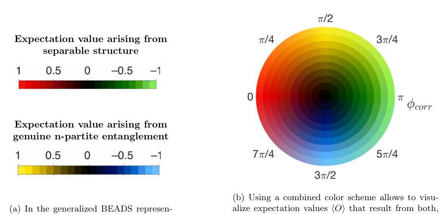
<figcaption class="paper-figure-caption"><b>Fig 1.</b> Figure 1: Standard color schemes used in the generalized BEADS representation for representing spherical function values, which can be interpreted in terms of expectation values [23].</figcaption>
</figure>
<figure class="paper-figure-card">
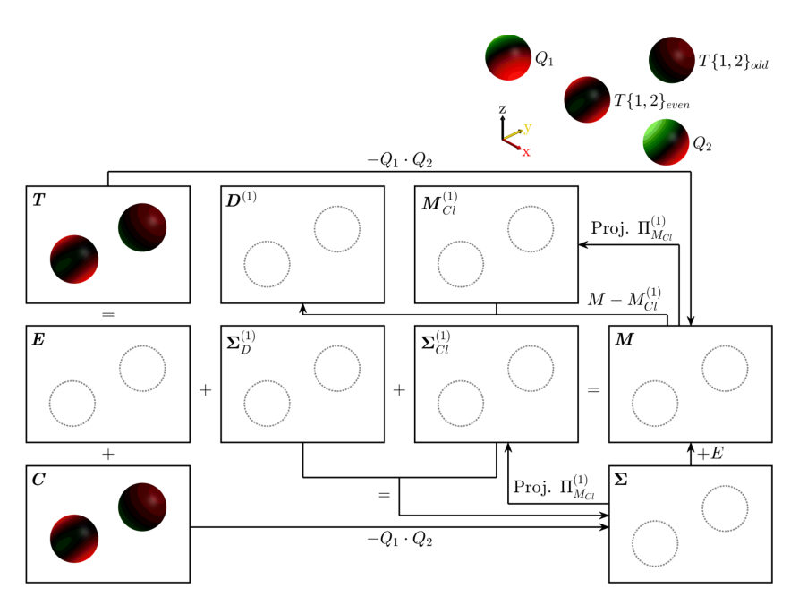
<figcaption class="paper-figure-caption"><b>Fig 2.</b> Figure 3: Overview of the entirety of bead types for ρproduct (see Eq. (29)). In the generalized BEADS picture, it is directly clear that the state is not genuinely correlated as there are no M-Beads. The T- and C-Beads are identical, but only encode redundant information, that is the products of the single-qubit reduced density operators Q1 and Q2.</figcaption>
</figure>
<figure class="paper-figure-card">
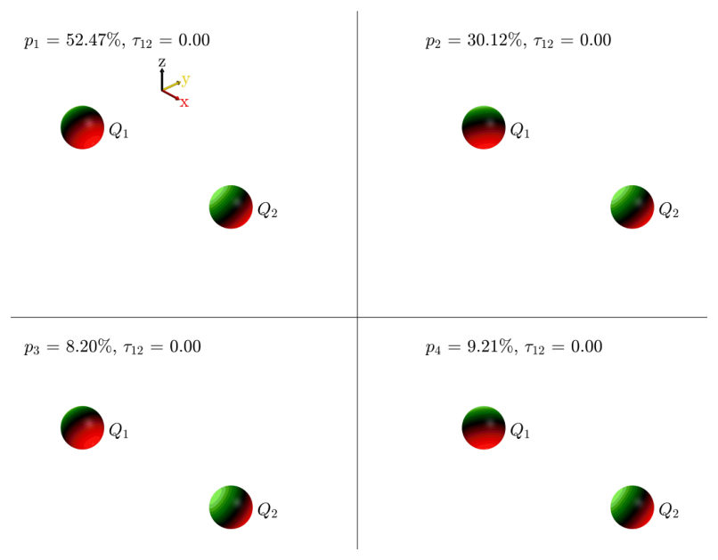
<figcaption class="paper-figure-caption"><b>Fig 3.</b> Figure 4: E-Beads representation of an optimized pure state decomposition of ρproduct. Indeed, the pure states do not show any E-Beads for which they are uncorrelated product states. As a direct consequence, the corresponding mixed state does also not show any E-Beads as these result as convex sums of the pure state E-Beads, which here are zero in all spatial directions. The weights and two-tangles of each pure state are plotted in the top left corner of every state’s subfigure.</figcaption>
</figure>
<figure class="paper-figure-card">
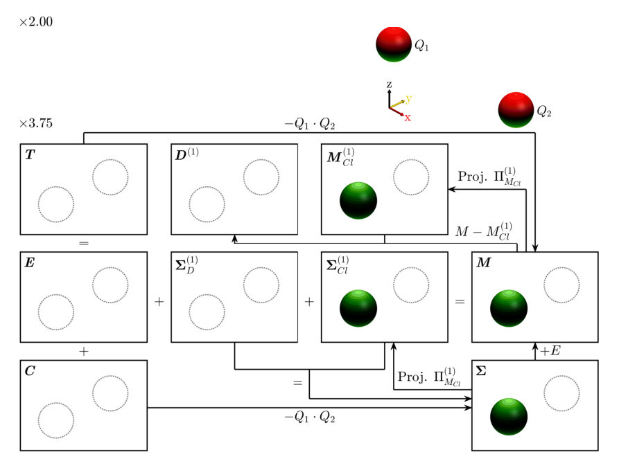
<figcaption class="paper-figure-caption"><b>Fig 4.</b> Figure 5: Complete generalized BEADS representation of the classical-classical state ρclass-class (Eq. (31)). Although the state has no total correlation function (T-Beads), it is still genuinely correlated (M-Bead). Since there are no E-Beads, all genuine correlations arise from the separable structure of the state, which is reflected in identical M- and Σ-Beads. Coinciding M (1) Cl -, Σ(1) Cl -, Σ- and M-Beads allow to unambiguously identify the state as being classically correlated with respect to an optimized local measurement of qubit 1. For better visibility, the spherical function values are scaled by the scaling factors shown on the left margin. Note that different scaling factors...</figcaption>
</figure>
<figure class="paper-figure-card">

<figcaption class="paper-figure-caption"><b>Fig 5.</b> Figure 6 provides the full generalized BEADS representation of the discussed state. Again, as the state is separable, all E-Beads vanish and T- and the C-Beads result in being identical. In this case the Q-Beads are all-black, which implies that the reduced single-qubit density operators are maximally mixed and do not encode any information. Thus, the entire information encoded on the correlation function beads corresponds to genuine correlations of the state and T-, C-, M-, and Σ-Beads all coincide consequently.</figcaption>
</figure>
</div>
<p><strong>Summary.</strong> This paper introduces the generalized BEADS representation, an advanced visualization technique, to overcome the abstract mathematical difficulties in analyzing mixed quantum states. It allows researchers to visually separate and quantify different types of quantum correlations, such as genuine entanglement and classical correlations. This tool proves superior to existing diagnostic methods like sector length analysis by directly mapping the underlying correlation structure.</p>
<p><strong>Why it may be interesting.</strong> It provides a powerful, intuitive visualization tool for complex quantum correlations in mixed states, which is crucial for understanding noise, entanglement distillation, and open quantum system dynamics.</p>
<details>
<summary>Detailed structure</summary>
<p><strong>Main problem.</strong> The primary challenge is the lack of intuitive visualization tools for understanding the complex correlation structures within mixed quantum states.</p>
<p><strong>Main result.</strong> The generalized BEADS representation successfully provides a visual framework to decompose and characterize total correlation, genuine n-partite entanglement, and classical correlations in mixed states.</p>
<p><strong>Method.</strong> The authors extend the BEADS visualization tool by using spherical functions ('beads') and a recursive optimization scheme to decompose the density operator into contributions corresponding to different correlation types.</p>
<p><strong>Model / system.</strong> The study focuses on N-qubit mixed quantum states ($
ho$), comparing the visualization power of the generalized BEADS representation against traditional methods like sector length analysis.</p>
<p><strong>Key observables.</strong> Total correlation, genuine n-partite entanglement, classical correlations, quantum discord, and sector lengths ($A_k$).</p>
<p><strong>Important parameters / regimes.</strong> The number of qubits (N), the mixing parameters ($p$), and the linearity parameter ($g$) used in the bead visualization.</p>
<p><strong>Assumptions / limitations.</strong> The method assumes that correlation structures can be decomposed into distinct, visually identifiable components (e.g., separable vs. entangled contributions).</p>
<p><strong>Figures summary.</strong> Figures compare the generalized BEADS visualization (using color coding for separable/entangled structure) against the results from sector length analysis for various mixed states, demonstrating where BEADS provides superior diagnostic power.</p>
<p><strong>Paper structure.</strong> The paper first introduces the generalized BEADS representation for mixed states, details the mathematical decomposition of correlation functions, and then contrasts its diagnostic power against sector length analysis using multiple examples of three-qubit states.</p>
</details>
<details>
<summary>Abstract</summary>
<p>A deep understanding of quantum information theory is essential for quantum science and technology. However, quantum mechanics and particularly quantum information theory suffer from a lack of intuitive images. Visualization tools offer novel perspectives on many problems in quantum physics by revealing important properties of quantum states and processes that are otherwise obscured by abstract mathematical formalisms. Here, we extend the previously established BEADS representation of pure states to the so-called generalized BEADS representation of mixed quantum states. We introduce spherical functions, so-called beads to visualize correlation structures of mixed quantum states. A recursive optimization scheme is used to obtain minimum-entanglement pure state decompositions of all subsystems of a given N-qubit state. We show how correlation function components can be decomposed into individual contributions that directly correspond to different types of correlations of mixed states. This allows us to visually characterize the total correlation, genuine n-partite entanglement, nonclassical quantum-discord-type correlations as well as classical correlations. After outlining the mathematical details relevant for constructing the representation, we examine the generalized BEADS representations for various classes of mixed states including product, classically correlated, separable but nonclassically correlated, as well as entangled states. As exemplary applications of the generalized BEADS representation, we showcase entanglement distillation and the effects of noise channels.</p>
</details>
<p><sub><a href="#top">↑ back to top</a></sub></p>
</details>
<h2 id="secondary-cond-mat-archives">Secondary cond-mat archives</h2>
<p><em>Papers from cond-mat.mtrl-sci, mes-hall, other, soft, supr-con. These archives are de-prioritized — they appear at the end regardless of relevance score.</em></p>
<h3 id="relevant-in-secondary-archives-20">Relevant in secondary archives (20)</h3>

<p><a id="paper-2610.20307"></a></p>
<h3 id="making-weak-interlayer-excitons-absorb-manipulating-the-effective-oscillator-strength-via-purcell-engineering-of-critical-coupling"><a href="http://arxiv.org/abs/2610.20307v1">Making Weak Interlayer Excitons Absorb: Manipulating the Effective Oscillator Strength via Purcell Engineering of Critical Coupling</a></h3>
<p><strong>Authors:</strong> Saroj Poudyal, Anabel Atash Kahlon, Michael Klein, Matan Meshulam, Yonatan Gershuni, Thomas Poirier, James H. Edgar, Mukesh Kumar, Seth Ariel Tongay, Itai Epstein<br>
<strong>Type:</strong> both · <strong>Category:</strong> other · <strong>PDF:</strong> <a href="https://arxiv.org/pdf/2610.20307v1">https://arxiv.org/pdf/2610.20307v1</a><br>
<strong>Analysis basis:</strong> full PDF text, analyzed in chunks
<strong>Topic relevance:</strong> <code>Tavis-Cummings &amp; cavity-many-emitter</code> <strong>3/5</strong> · <code>interference shaping light</code> <strong>3/5</strong> · <code>quantum optics experiment</code> <strong>3/5</strong> · <code>correlated / nonlocal dissipation</code> <strong>2/5</strong> · <code>driven-dissipative phase transition</code> <strong>2/5</strong> · <code>methods for driven-dissipative</code> <strong>2/5</strong> · <code>Keldysh / 2PI / non-Gaussian methods</code> <strong>1/5</strong> · <code>analog quantum simulation</code> <strong>1/5</strong> · <code>quantum measurements</code> <strong>1/5</strong></p>
<div class="figure-strip-hint">↔ Scroll figures horizontally</div>
<div class="paper-figures-scroll">
<figure class="paper-figure-card">
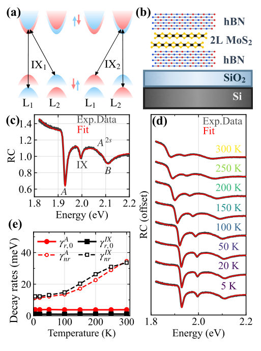
<figcaption class="paper-figure-caption"><b>Fig 1.</b> FIG. 1. Characterization of IX in bilayer MoS2. (a) Schematic band structure of bilayer MoS2 near the K point illustrating the formation of IXs. Blue and red colors denote spin-up and spin-down states respectively, while L1 and L2 correspond to the two layers of the bilayer. (b) Schematic diagram of de- vice geometry for characterization of the IX in which bilayer MoS2 is encapsulated by hBN on a SiO2/Si substrate. (c) RC spectrum (black dotted line) of hBN-encapsulated bilayer MoS2 measured at T =5 K on a SiO2/Si reference substrate, together with the TLM fit (red line). The four resonances corresponding to the A exciton, the IX, the Rydberg state of the A exciton, and the B exciton are...</figcaption>
</figure>
<figure class="paper-figure-card">
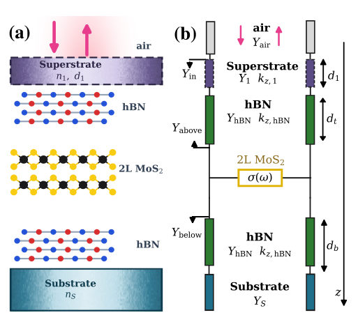
<figcaption class="paper-figure-caption"><b>Fig 2.</b> FIG. 2. Transmission-line model of the general planar van der Waals heterostructure. (a) Phys- ical stack, air / superstrate (n1, d1) / hBN (dt) / bilayer MoS2 / hBN (db) / substrate (nS). The superstrate is dashed as it may be absent, a thin metal film, or a Bragg stack. (b) Equivalent circuit, each bulk layer a line section of admittance Yj = njε0c and propagation constant kz,j, and the bilayer a shunt admittance σ(ω) bridging the line at its own plane. Arrows give the direction of view. Yabove and Ybelow are the admittances seen looking up and down from the bilayer plane, and together with eYabove they fix the optical response of any geometry treated here (Table SIII).</figcaption>
</figure>
<figure class="paper-figure-card">
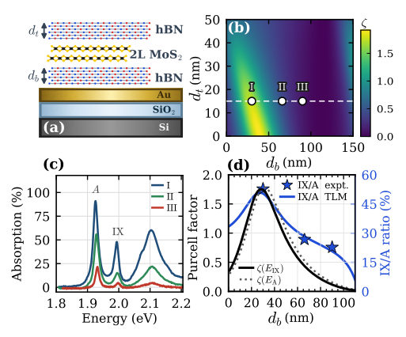
<figcaption class="paper-figure-caption"><b>Fig 3.</b> FIG. 3. Experimental realization of open cav- ity. (a) Device schematic: air / hBN(dt) / bilayer MoS2 / hBN(db) / Au / SiO2 / Si. Varying db at fixed dt tunes the bilayer from a field antinode (db ≈30 nm, device I) to near a node (db ≈90 nm, device III). (b) Two-dimensional map of the TLM Purcell factor ζ versus dt and db at the IX energy. The three fabricated geometries are marked. (c) Absorption spectra A = 1 −R/R0 at T =5 K for device I (15/30 nm), device II (15/66 nm), and device III (15/90 nm), with the A-exciton and IX peaks labeled. (d) TLM Purcell factor ζ evaluated at EIX (solid) and EA (dotted) versus bottom hBN thickness db at fixed dt = 15 nm (left axis, black). IX-to-A...</figcaption>
</figure>
<figure class="paper-figure-card">
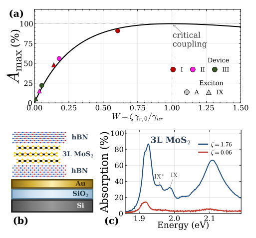
<figcaption class="paper-figure-caption"><b>Fig 4.</b> FIG. 4. Coupling dependent enhancement and transfer of the optimized cavity. (a) Universal absorption curve Amax = 4W/(1 + W)2 against W = ζγr,0/γnr. The abscissa is the TLM value and the ordinate the measured peak absorption. All six operating points lie on the undercoupled branch, with the IX where the curve is steep and the A exciton where it has already flattened. (b) Schematic of the encapsulated trilayer MoS2 devices. (c) Trilayer absorption at T = 5 K for the antinode geometry with ζ = 1.76 and the node geometry with ζ = 0.06. The interlayer excitons are marked.</figcaption>
</figure>
<figure class="paper-figure-card">
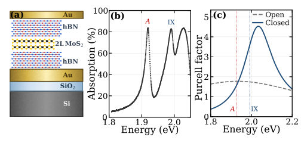
<figcaption class="paper-figure-caption"><b>Fig 5.</b> FIG. 5. Experimental realization of the closed cavity. (a) Device schematic of air / Au(dg=25 nm) / hBN / bilayer MoS2 / hBN / Au. (b) Absorption of bilayer MoS2 in closed cavity. The A exciton and the IX are marked. (c) Purcell fac- tor ζ(E) for closed cavity (solid) and for the antinode open cavity device I (dashed), with the four resonance energies marked. The open cavity is nearly flat across the excitonic window and therefore presents a similar photonic environment to every resonance, whereas the closed cavity varies by nearly a factor of three and gives the IX a Purcell factor ≈2.3 times that of the A exciton.</figcaption>
</figure>
</div>

<p><strong>Summary.</strong> The research addresses the challenge of weakly interacting interlayer excitons in TMD bilayers by utilizing Purcell engineering within optical cavities. By modeling the system with a transmission-line approach, the authors show that tuning the cavity geometry can selectively enhance the IX absorption, allowing for strong optical probing comparable to the dominant intralayer transitions. This establishes critical coupling engineering as a general tool for controlling weak excitonic dynamics.</p>
<p><strong>Why it may be interesting.</strong> This work is highly relevant to AMO physics and quantum optics as it demonstrates precise, active control over weak quantum optical transitions (excitons) by engineering the photonic environment (Purcell effect) to reach critical coupling. It provides a general blueprint for enhancing weak quantum emitters.</p>
<details>
<summary>Detailed structure</summary>
<p><strong>Main problem.</strong> Interlayer excitons (IXs) in TMD bilayers have weak intrinsic oscillator strengths due to large electron-hole separation, limiting their direct optical probing.</p>
<p><strong>Main result.</strong> Purcell engineering of critical coupling can selectively enhance the weak IX transition, achieving absorption modulation up to an order of magnitude in open cavities and reaching 83% excitonic absorption in closed cavities.</p>
<p><strong>Method.</strong> The study combines theoretical modeling using a closed-form transmission-line model (TLM) with experimental measurements of reflection-contrast spectra in engineered optical cavity architectures.</p>
<p><strong>Model / system.</strong> The system involves IXs in TMD bilayers (e.g., MoS2) placed within van der Waals heterostructures that form optical cavities. The optical response is modeled using Lorentzian susceptibility and analyzed via the TLM, which accounts for cavity-modified radiative decay rates ($\gamma_r$).</p>
<p><strong>Key observables.</strong> IX and A exciton absorption spectra, Purcell factor ($\zeta$), and the effective oscillator strength ($W$).</p>
<p><strong>Important parameters / regimes.</strong> Critical coupling regime ($\gamma_r = \gamma_{nr}$), cavity thicknesses (hBN layers, top/bottom mirrors), and temperature (5 K to 290 K).</p>
<p><strong>Assumptions / limitations.</strong> The optical response can be accurately described by a transmission-line model separating excitonic and photonic contributions; the system is analyzed under the assumption of cavity-mediated coupling.</p>
<p><strong>Figures summary.</strong> Figures show schematic band structures, device geometries, and measured reflection-contrast spectra demonstrating the weak IX resonance. Additional figures detail temperature dependence and the optimization of cavity parameters (e.g., top gold thickness) to maximize enhancement.</p>
<p><strong>Paper structure.</strong> The paper first establishes the problem of weak IX absorption. It then develops the theoretical framework using the TLM to predict Purcell enhancement by tuning cavity parameters. Experimentally, it demonstrates this enhancement in open cavities, followed by a detailed analysis of closed-cavity structures to achieve near-intralayer exciton absorption levels.</p>
</details>
<details>
<summary>Abstract</summary>
<p>Interlayer excitons (IXs) in transition metal dichalcogenide bilayers possess unique dipolar properties, providing a path for exploring correlated many-body phases, electrically tunable dipole-dipole interactions, and long-range exciton transport. However, the large electron-hole separation underlying their dipolar character also results in a significantly reduced oscillator strength, limiting their direct optical interaction with light, and thus the direct probing of their dynamics and many-body interactions. Here, we show that by using Purcell engineering of critical coupling, a weak interlayer transition can absorb as strongly as the dominant intralayer transition, despite its much smaller intrinsic oscillator strength. Using this approach, in an open cavity architecture we demonstrate an order of magnitude IX absorption modulation in bilayer and trilayer MoS2, with doubling of the IX to A-exciton interaction strength weight from ~23% to ~53%. Furthermore, we demonstrate that in a tailored closed cavity architecture, the IX enhancement can reach beyond an order of magnitude, from ~5% to ~83% excitonic absorption, enabling IX absorption similar to intralayer excitons. An analytical description of the interaction is obtained via a closed-form transmission-line model which separates the excitonic and photonic contributions to the optical response, revealing how cavity architecture can be designed towards critical coupling. Our findings establish Purcell engineering of critical coupling as a general route to controlling and enhancing weak excitonic transitions.</p>
</details>
<p><sub><a href="#top">↑ back to top</a></sub></p>

<p><a id="paper-2610.19061"></a></p>
<h3 id="cooperative-boundary-switching-of-mesoscopic-real-spectra-in-a-non-hermitian-chain-family"><a href="http://arxiv.org/abs/2610.19061v1">Cooperative Boundary Switching of Mesoscopic Real Spectra in a Non-Hermitian Chain Family</a></h3>
<p><strong>Authors:</strong> Chengxi Li, Hao Zhu, Tie-Fu Zhang, Wanzi Sun, Wuming Li<br>
<strong>Type:</strong> theory · <strong>Category:</strong> other · <strong>PDF:</strong> <a href="https://arxiv.org/pdf/2610.19061v1">https://arxiv.org/pdf/2610.19061v1</a><br>
<strong>Analysis basis:</strong> full PDF text, analyzed in chunks
<strong>Topic relevance:</strong> <code>driven-dissipative phase transition</code> <strong>3/5</strong> · <code>Keldysh / 2PI / non-Gaussian methods</code> <strong>2/5</strong> · <code>methods for driven-dissipative</code> <strong>2/5</strong> · <code>non-equilibrium universality</code> <strong>2/5</strong> · <code>analog quantum simulation</code> <strong>1/5</strong> · <code>correlated / nonlocal dissipation</code> <strong>1/5</strong> · <code>quantum measurements</code> <strong>1/5</strong></p>
<div class="figure-strip-hint">↔ Scroll figures horizontally</div>
<div class="paper-figures-scroll">
<figure class="paper-figure-card">
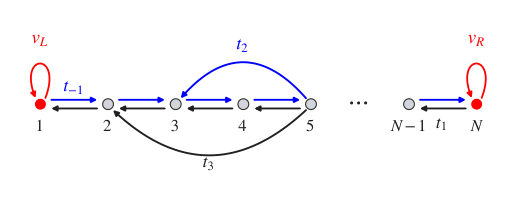
<figcaption class="paper-figure-caption"><b>Fig 1.</b> FIG. 1. Directed finite-range chain with N sites. Arrows carry the real hopping tn from site j + n to j; arcs show representative bulk hoppings, repeated along the chain. Red endpoints carry the on-site controls vL, vR. Bulk hoppings are t−1 = 3/2, t1 = −9/44 −δ, t2 = 21/11, and t3 = −1, where δ is the bulk detuning. The omitted central segment is marked by dots.</figcaption>
</figure>
<figure class="paper-figure-card">
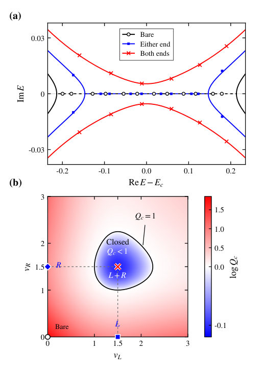
<figcaption class="paper-figure-caption"><b>Fig 2.</b> FIG. 2. Cooperative closure at fixed bulk coefficients. (a) Lo- cal spectra at N = 256, δ = 0, and Ec = 71/44. With r = 3/2, black circles denote bare (vL, vR) = (0, 0), blue squares either end (r, 0) or (0, r), and red crosses both ends (r, r). Their displayed-window real-level counts are NR = 12, 8, 0, respec- tively. Solid curves are asymptotic complex branches derived in the Supplemental Material; alternating black and blue dashes distinguish overlapping real-axis allowed segments. (b) log Qc versus vL, vR, where Qc is the critical conjugate-pair amplitude relative to the real term. The black Qc = 1 con- tour bounds the asymptotic closing region Qc &lt; 1.</figcaption>
</figure>
<figure class="paper-figure-card">
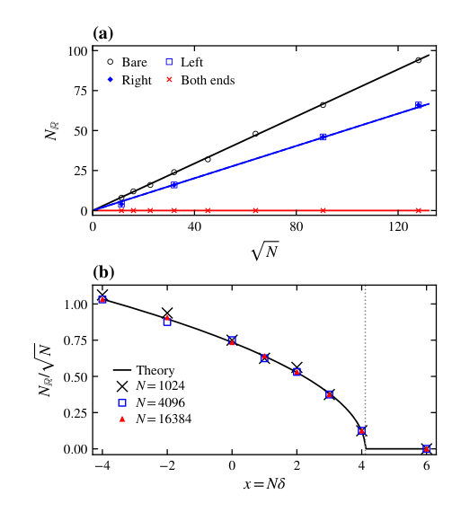
<figcaption class="paper-figure-caption"><b>Fig 3.</b> FIG. 3. A growing population with vanishing spectral frac- tion. NR counts local real eigenvalues and N is chain length. Symbols give real-root counts from the exact finite determi- nant; curves use analytic coefficients. Size-dependent numer- ical windows enclose the predicted population (Supplemental Material). (a) Bare, optimal left-, right-, and two-end bound- aries at δ = 0, compared with Eq. (4). Nested blue squares and diamonds distinguish coincident single-end counts. (b) Bare-boundary crossover versus x = Nδ. Black crosses, blue squares, and red triangles denote N = 1024, 4096, 16384, re- spectively. Nested markers distinguish points that overlap in the scaled coordinates (x, NR/ √</figcaption>
</figure>
<figure class="paper-figure-card">

<figcaption class="paper-figure-caption"><b>Fig 4.</b> FIG. 4. Fixed-port passive reflection of the cooperative switch. (a) Passive Hermitian double chain with port A1 and endpoint interchain controls. (b) Scaled amplitude defect NqN versus s = √</figcaption>
</figure>
</div>

<p><strong>Summary.</strong> This theoretical work analyzes the spectral properties of non-Hermitian mesoscopic chains, focusing on the existence of a growing population of real eigenvalues. It proves that while single boundary controls cannot eliminate this spectrum, the cooperative control of two boundaries can achieve this, fixing a minimum control requirement independent of bulk spectral measurements. The methodology involves advanced spectral analysis techniques applied to open quantum systems.</p>
<p><strong>Why it may be interesting.</strong> This work provides rigorous mathematical tools for controlling spectral properties in open, non-Hermitian quantum systems, which is highly relevant for quantum optics and open quantum systems research.</p>
<details>
<summary>Detailed structure</summary>
<p><strong>Main problem.</strong> The paper investigates the cooperative boundary switching required to control and eliminate a growing, subextensive population of real eigenvalues in a non-Hermitian mesoscopic chain.</p>
<p><strong>Main result.</strong> The population of real modes scales as $\sqrt{N}$ and is preserved by single-end potentials, but its removal requires the multiplicative control provided by two separated end potentials.</p>
<p><strong>Method.</strong> The analysis uses determinant calculations, input-output theory, and asymptotic analysis (like Rouché's theorem) to count and characterize the real eigenvalues of the non-Hermitian Hamiltonian.</p>
<p><strong>Model / system.</strong> The system is a non-interacting, open, non-Hermitian chain of $N$ sites, modeled by a specific Hamiltonian involving long-range hoppings and tunable boundary potentials ($v_L, v_R$).</p>
<p><strong>Key observables.</strong> The count of real eigenvalues ($N_R$), reflection amplitude ($\varrho_N$), and the amplitude defect ($q_N$).</p>
<p><strong>Important parameters / regimes.</strong> Chain length ($N$), boundary potentials ($v_L, v_R$), and the detuning/energy scan parameter ($E$).</p>
<p><strong>Assumptions / limitations.</strong> The analysis relies on asymptotic limits ($N \to \infty$) and specific error budgets for finite-size effects and calibration.</p>
<p><strong>Figures summary.</strong> Figures compare the growing population of real modes under different boundary conditions (single vs. two ends) and show the scaling of reflection amplitudes and resonance counts versus energy scan parameters.</p>
<p><strong>Paper structure.</strong> The paper progresses from establishing the existence of the $\sqrt{N}$ real spectrum preserved by single boundaries, to demonstrating that two boundaries are necessary for closure, and finally analyzing the spectral robustness and finite-size error bounds.</p>
</details>
<details>
<summary>Abstract</summary>
<p>At fixed bulk criticality, every fixed nonsingular real single-end potential preserves a growing local population of real eigenvalues in an open analytic family of non-Hermitian chains. An open region of two-end real potentials removes this population. A boundary-amplitude criterion fixes the minimum number of controlled ends. The population grows as $\sqrt N$, where $N$ is chain length, although its normalized spectral weight vanishes and the local limiting bands remain unchanged. For a representative chain's four zero-detuning settings, an independent passive Hermitian double chain converts this distinction into separated resonances at one fixed local port under a common coupling scan at fixed probe carrier. Its absolute reflection contrast and stability margin both scale as $N^{-1}$, with explicit sufficient resource budgets. Boundary amplitudes thus fix a minimum control requirement that limiting bands and thermodynamic spectral density do not specify.</p>
</details>
<p><sub><a href="#top">↑ back to top</a></sub></p>

<p><a id="paper-2610.19793"></a></p>
<h3 id="orientation-dependent-universality-of-spin-transport-fluctuations-in-two-dimensional-altermagnets"><a href="http://arxiv.org/abs/2610.19793v1">Orientation-Dependent Universality of Spin-Transport Fluctuations in Two-Dimensional Altermagnets</a></h3>
<p><strong>Authors:</strong> Yihan Zhang, Zheng Qin, Donghui Xu, Junjie Zeng, Zhen Ning, Rui Wang<br>
<strong>Type:</strong> theory · <strong>Category:</strong> disordered systems and neural networks · <strong>PDF:</strong> <a href="https://arxiv.org/pdf/2610.19793v1">https://arxiv.org/pdf/2610.19793v1</a><br>
<strong>Analysis basis:</strong> full PDF text, analyzed in chunks
<strong>Topic relevance:</strong> <code>Keldysh / 2PI / non-Gaussian methods</code> <strong>3/5</strong> · <code>methods for driven-dissipative</code> <strong>3/5</strong> · <code>non-equilibrium universality</code> <strong>3/5</strong> · <code>analog quantum simulation</code> <strong>1/5</strong></p>
<div class="figure-strip-hint">↔ Scroll figures horizontally</div>
<div class="paper-figures-scroll">
<figure class="paper-figure-card">

<figcaption class="paper-figure-caption"><b>Fig 1.</b> FIG. 1. Schematic illustration of the tight-binding model described by Eq. (1) and its spin-split electronic structure. (a) The upper panel illustrates the orientation of the altermagnetic anisotropy and the as- sociated angle θ in reciprocal space. The lower panel shows the cor- responding real-space hopping pattern. (b) Spin-resolved band struc- ture along the high-symmetry path Γ-X-M-Y-Γ. The horizontal line marks the Fermi energy EF = 0. The orange solid and blue dashed curves represent the spin-up and spin-down channels, respectively. (c) Spin-resolved momentum-space spectral weight at EF = 0, shown in the equivalent Brillouin-zone representation 0 ≤kx, ky ≤2π. The color hue represents...</figcaption>
</figure>
<figure class="paper-figure-card">

<figcaption class="paper-figure-caption"><b>Fig 2.</b> FIG. 2. Two- and four-terminal transport geometries and their corre- sponding disorder-averaged responses. (a,b) Two- and four-terminal geometries, respectively. The orange and blue regions denote alter- magnetic (AM) and normal-metal (NM) leads, while the gray square represents the disordered scattering region of size L × L. The num- bers label the lead indices. (c,e) Disorder-averaged spin conductance ⟨σs⟩for the two-terminal geometry shown in panel (a), as functions of the Fermi energy E and the altermagnetic orientation angle θ, re- spectively. (d,f) Corresponding spin Hall conductance ⟨σsH⟩for the four-terminal geometry shown in panel (b). For the energy scans, θ = 0 in panel (c) and θ...</figcaption>
</figure>
<figure class="paper-figure-card">

<figcaption class="paper-figure-caption"><b>Fig 3.</b> FIG. 3. Mesoscopic conductance fluctuations in the two- and four-terminal geometries at L = 400. The device schematics on the left identify the geometry associated with each row. (a–c) Spin-conductance fluctuation rms(σs) in the two-terminal geometry. (d–f) Spin-Hall conductance fluctuation rms(σsH) in the four-terminal geometry. Panels (a,d), (b,e), and (c,f) show the dependence on the Fermi energy E, the altermagnetic orientation angle θ, and the disorder strength W, respectively. For the energy and angular scans in panels (a,b,d,e), tAM = 0.9t and W = t, 3t, and 5t. The energy scans are calculated at θ = π/4, while the angular scans are calculated at E = t. For the disorder scans in...</figcaption>
</figure>
<figure class="paper-figure-card">

<figcaption class="paper-figure-caption"><b>Fig 4.</b> FIG. 4. Disorder dependence of the correlation between the two conserved spin channels. (a) Correlation coefficient ρ↑↓between the spin-up and spin-down longitudinal conductances in the two- terminal geometry. (b) Corresponding correlation coefficient be- tween the spin-resolved Hall conductances in the four-terminal ge- ometry. The correlation coefficient is defined in Eq. (17). The in- sets show the corresponding covariance, cov(σ↑, σ↓) in panel (a) and cov(σH,↑, σH,↓) in panel (b), as defined in Eq. (16). The covariance is expressed in units of (e/4π)2 in both panels. The curves correspond to tAM = 0.6t, 0.7t, 0.8t, and 0.9t. The gray dashed lines indicate zero correlation or covariance,...</figcaption>
</figure>
<figure class="paper-figure-card">

<figcaption class="paper-figure-caption"><b>Fig 5.</b> Figure 4 resolves the correlations that accompany the dis- order crossover. In the two-terminal geometry [Fig. 4(a)], the correlation coefficient between the spin-up and spin-down contributions to the longitudinal spin conductance is positive at weak disorder, falls rapidly toward zero, and subsequently fluctuates around zero. The inset confirms that the corre- sponding covariance becomes small once the initial weak- disorder regime has been left. According to Eq. (18), the lon- gitudinal spin-conductance variance then approaches the sum of the two channel variances. Thus, the conductance fluctu- ations of the two conserved spin sectors are approximately uncorrelated over most of the tested...</figcaption>
</figure>
</div>

<p><strong>Summary.</strong> This work explores orientation-dependent universal spin-transport fluctuations in disordered 2D altermagnets. By analyzing the Hamiltonian's dependence on the crystal angle $\theta$, the authors show that this orientation controls the magnitude of spin-conductance fluctuations. This establishes crystalline anisotropy as a key tuning knob for spin transport properties within a fixed symmetry framework.</p>
<p><strong>Why it may be interesting.</strong> The concept of using crystalline orientation as a tunable control parameter within a fixed symmetry class is highly relevant for designing quantum materials where transport properties can be engineered via structural control.</p>
<details>
<summary>Detailed structure</summary>
<p><strong>Main problem.</strong> The paper investigates how crystalline anisotropy influences universal spin-transport fluctuations in disordered two-dimensional altermagnets.</p>
<p><strong>Main result.</strong> The orientation of the crystal lattice acts as a control parameter, modulating both the amplitude of spin-transport fluctuations and the stability of disorder-insensitive plateaus.</p>
<p><strong>Method.</strong> The study employs a disordered lattice model analyzed using non-equilibrium Green’s functions and the Landauer-Büttiker formalism to calculate spin-conductance fluctuations.</p>
<p><strong>Model / system.</strong> The system is a disordered two-dimensional $d$-wave altermagnet without spin-orbit coupling, modeled by a spinful tight-binding Hamiltonian incorporating anisotropic hopping terms dependent on the crystal orientation angle $\theta$.</p>
<p><strong>Key observables.</strong> Longitudinal spin-conductance fluctuations ($  ext{rms}(\sigma_s)$) and transverse spin-Hall conductance fluctuations ($  ext{rms}(\sigma_{sH})$).</p>
<p><strong>Important parameters / regimes.</strong> Crystalline orientation angle $\theta$, disorder strength $W$, and the altermagnetic coupling strength $t_{	ext{AM}}$.</p>
<p><strong>Assumptions / limitations.</strong> The analysis assumes the absence of spin-orbit coupling, and the effective symmetry within each spin block is classified as Class AI.</p>
<p><strong>Figures summary.</strong> Figures illustrate the tight-binding model, spin-resolved band structures, and plots showing the angular dependence of fluctuation amplitudes ($   ext{rms}(\sigma_s)$ and $   ext{rms}(\sigma_{sH})$) relative to the anisotropy tensor.</p>
<p><strong>Paper structure.</strong> The paper establishes the theoretical framework by introducing the anisotropic Hamiltonian, calculates the spin-transport observables using Green's functions, and then systematically analyzes how the orientation angle $\theta$ controls the magnitude and behavior of these universal fluctuations.</p>
</details>
<details>
<summary>Abstract</summary>
<p>Universal conductance fluctuations are conventionally organized by symmetry class, but crystalline anisotropy introduces additional structure in spin transport. Here we demonstrate orientation-dependent universal spin-transport fluctuations in disordered two-dimensional $d$-wave altermagnets without spin-orbit coupling. Rotating the altermagnetic orientation changes both longitudinal spin-conductance and transverse spin-Hall conductance fluctuations, while each conserved-spin sector remains in class AI. Altermagnetic orientation controls both the fluctuation amplitudes and the development of disorder-insensitive plateaus. These plateaus become flatter and less sensitive to the altermagnetic strength over the studied parameter ranges as the orientation approaches $45^\circ$, with representative fluctuation amplitudes of approximately $0.60e/(4π)$ for the longitudinal spin conductance and $0.40\,e/(4π)$ for the spin-Hall conductance. The longitudinal fluctuation amplitude correlates strongly with anisotropy of the clean-band Fermi-velocity tensor. Spin-sector covariances explain how the conserved channels combine into total fluctuations. Our results extend anisotropy-sensitive universal-fluctuation physics to conserved-spin altermagnetic transport and establish crystalline orientation as a control parameter within a fixed symmetry class.</p>
</details>
<p><sub><a href="#top">↑ back to top</a></sub></p>

<p><a id="paper-2610.19816"></a></p>
<h3 id="nonadiabatic-dynamics-under-slow-parametric-modulation-in-nonlinear-graphene-resonators"><a href="http://arxiv.org/abs/2610.19816v1">Nonadiabatic dynamics under slow parametric modulation in nonlinear graphene resonators</a></h3>
<p><strong>Authors:</strong> Chris F. D. Wattjes, Haemin Lim, Pierpaolo Belardinelli, John E. Sader, Peter G. Steeneken, Farbod Alijani<br>
<strong>Type:</strong> both · <strong>Category:</strong> other · <strong>PDF:</strong> <a href="https://arxiv.org/pdf/2610.19816v1">https://arxiv.org/pdf/2610.19816v1</a><br>
<strong>Analysis basis:</strong> full PDF text, analyzed in chunks
<strong>Topic relevance:</strong> <code>driven-dissipative phase transition</code> <strong>3/5</strong> · <code>non-equilibrium universality</code> <strong>2/5</strong> · <code>Frenkel-Kontorova</code> <strong>1/5</strong> · <code>analog quantum simulation</code> <strong>1/5</strong> · <code>methods for driven-dissipative</code> <strong>1/5</strong></p>
<div class="figure-strip-hint">↔ Scroll figures horizontally</div>
<div class="paper-figures-scroll">
<figure class="paper-figure-card">

<figcaption class="paper-figure-caption"><b>Fig 1.</b> Fig. 1 Slow parametric–fast direct driving of graphene membranes. a, Fabry–P´erot inter- ferometry setup (PD: photodiode, PBS: polarizing beam splitter, QWP: quarter-wave plate, DM: dichroic mirror), with a red readout laser and blue drive laser. b, Dual-drive concept illustrated by a child-on-a-swing analogy: slow parametric modulation changes the stiffness, while fast direct forcing provides the resonant drive. c, Nonlinear frequency response (green) and Duffing fit (solid lines) without slow modulation, yielding f0 = 10.765 ± 0.019 MHz, Γ = 4.90 ± 0.81 × 104 s−1, γ = 2.15±0.61×1017 V−2s−2, and FF = 1.65±0.38×1011 Vs−2 at VF = 1.5 V. The slow modulation periodically shifts the resonance...</figcaption>
</figure>
<figure class="paper-figure-card">

<figcaption class="paper-figure-caption"><b>Fig 2.</b> Fig. 2 Adiabatic tracking under slow tension modulation. a–d, Dynamics at VS = 1.0 V, where the resonator follows the instantaneous high-amplitude stable state of the evolving state space. e–h, Dynamics at VS = 1.5 V, where modulation strength is sufficiently large to reach both saddle- node bifurcations, so the resonator jumps between stable branches periodically. Both measurements are performed at slow modulation frequency fS = 1 kHz. a,h, Measured response amplitude (green) on the instantaneous nonlinear frequency-response curves. The yellow-to-blue curves indicate successive modulation phases; solid and dashed lines denote stable and unstable solutions. Coloured circles indicate where...</figcaption>
</figure>
<figure class="paper-figure-card">

<figcaption class="paper-figure-caption"><b>Fig 3.</b> Fig. 3 Nonadiabatic motion under slow tension modulation. a–d, Dynamics at fS = 50 kHz and VS = 1.0 V (AS = 30 kHz), where finite mechanical relaxation produces a pronounced lag. e– h, Period-doubled dynamics at fS = 20 kHz and VS = 0.28 V (AS = 27.16 kHz). a,h, Measured response amplitude (green) on the instantaneous nonlinear frequency-response curves. The yellow-to- blue curves indicate successive modulation phases; solid and dashed lines denote stable and unstable solutions. Coloured circles indicate where the phase of the measured response coincides with that of the same-coloured curves. The horizontal axis is the effective instantaneous detuning, δf(t) = f −2f0 + ˆf0(t), with f the...</figcaption>
</figure>
<figure class="paper-figure-card">

<figcaption class="paper-figure-caption"><b>Fig 4.</b> Fig. 4 Chaotic dynamics as a result of slow tension modulation. a, Measured response amplitude (green) resulting from slow modulation with frequency fS = 20 kHz and amplitude VS = 0.32 V on the instantaneous nonlinear frequency-response curves. The yellow-to-blue curves indicate successive modulation phases; solid and dashed lines denote stable and unstable solutions. Coloured circles indicate where the phase of the measured response coincides with that of the same-coloured curves. The horizontal axis is the effective instantaneous detuning, δf(t) = f −2f0 + ˆf0(t), with f the actual response frequency, f0 the unmodulated resonance frequency and ˆf0(t) its modulation-induced resonance...</figcaption>
</figure>
<figure class="paper-figure-card">

<figcaption class="paper-figure-caption"><b>Fig 5.</b> Fig. 5 Evolution of phase-space structure as a function of frequency and amplitude of slow tension modulation. a, Phase space of the Hamiltonian system showing the saddle point (S), stable fixed points (N±), and the corresponding homoclinic orbits (χ±) forming the separatrix. Under perturbation, the stable and unstable manifolds of the saddle, denoted by W s and W u, respectively, no longer coincide. b, Melnikov prediction of the two instability thresholds T± as a function of modulation amplitude and frequency. The shaded region serves only as a visual guide to the side of the curve where chaos is expected, without implying an additional threshold or boundary. c-d, Experimental and...</figcaption>
</figure>
</div>

<p><strong>Summary.</strong> This work demonstrates how parametric modulation of a nonlinear graphene resonator can drive its phase space in real time, moving beyond simple external forcing. By analyzing the competition between modulation and relaxation timescales, the authors predict and observe transitions into parametric instability and chaos. This offers a general method for controlling nonadiabatic dynamics in various physical systems.</p>
<p><strong>Why it may be interesting.</strong> The concept of parametrically driving the rotating frame itself provides a general, controllable mechanism for inducing nonadiabatic dynamics, which is highly relevant for controlling quantum systems where the Hamiltonian parameters are time-dependent.</p>
<details>
<summary>Detailed structure</summary>
<p><strong>Main problem.</strong> The paper investigates nonadiabatic dynamics in nonlinear systems when the underlying phase-space structure itself evolves in time due to slow parametric modulation.</p>
<p><strong>Main result.</strong> The system transitions from adiabatic tracking of fixed points to parametric instabilities and chaos when the modulation rate becomes comparable to the system's intrinsic relaxation rate.</p>
<p><strong>Method.</strong> The study combines experimental measurements on graphene resonators with theoretical tools like slow-variable theory, Melnikov analysis, and Lyapunov exponent calculations.</p>
<p><strong>Model / system.</strong> The physical platform is a nonlinear graphene resonator (drum) driven by a fast MHz resonant drive and a slow kHz parametric modulation of its tension. The dynamics are modeled by a Duffing-Mathieu type equation.</p>
<p><strong>Key observables.</strong> Bistability, period-doubling, chaotic motion, Lyapunov exponents ($\lambda_{max}$), and the Poincaré section structure.</p>
<p><strong>Important parameters / regimes.</strong> The ratio between the modulation rate ($\omega_S$) and the mechanical relaxation rate ($\Gamma$) is critical for determining the dynamic regime.</p>
<p><strong>Assumptions / limitations.</strong> The analysis assumes the strong tension sensitivity of the graphene resonance frequency, and approximations are made by transforming to a rotating frame and using averaging methods.</p>
<p><strong>Figures summary.</strong> Figures illustrate the setup, the transition from adiabatic following to instability, and the quantitative detection of chaos using Lyapunov exponents and bifurcation diagrams across multiple experimental setups.</p>
<p><strong>Paper structure.</strong> The paper progresses from establishing the physical problem and the experimental setup (graphene resonator) to developing the mathematical model (Duffing-Mathieu equation in a rotating frame). It then analyzes the three dynamic regimes (adiabatic, delayed, chaotic) using advanced tools like Melnikov analysis and Lyapunov exponents, concluding with validation on multiple physical realizations.</p>
</details>
<details>
<summary>Abstract</summary>
<p>Resonantly driven nonlinear systems, from superconducting circuits to nanomechanical resonators, are often described in a rotating frame, where amplitude and phase evolve slowly within a fixed landscape of stable and unstable states. How such systems behave when this landscape moves on their intrinsic timescale remains to be understood. Here, we exploit the strong tension sensitivity of a graphene drum's resonance frequency to reshape the rotating-frame phase space of a bistable mechanical mode in real time, combining an MHz-frequency resonant drive with kHz-frequency tension modulation. When the modulation rate becomes comparable to the mechanical relaxation rate, adiabatic tracking of the fixed points breaks down. Instead, parametric instabilities emerge in the slow dynamics at frequencies set by libration around these points rather than by the mechanical resonance; stronger modulation drives period doubling and chaos. A slow-variable theory predicts where the instabilities occur, and Melnikov analysis captures the onset of chaos. These results show that the rotating frame itself can be parametrically driven, offering a general route to controlling nonadiabatic dynamics in systems ranging from Josephson bifurcation amplifiers to cold atoms.</p>
</details>
<p><sub><a href="#top">↑ back to top</a></sub></p>

<p><a id="paper-2610.18980"></a></p>
<h3 id="transmission-representation-of-the-josephson-free-energy-beyond-the-short-junction-limit"><a href="http://arxiv.org/abs/2610.18980v1">Transmission representation of the Josephson free energy beyond the short-junction limit</a></h3>
<p><strong>Authors:</strong> Anton R. Akhmerov<br>
<strong>Type:</strong> theory · <strong>Category:</strong> statistical mechanics · <strong>PDF:</strong> <a href="https://arxiv.org/pdf/2610.18980v1">https://arxiv.org/pdf/2610.18980v1</a><br>
<strong>Analysis basis:</strong> full PDF text, analyzed in chunks
<strong>Topic relevance:</strong> <code>Keldysh / 2PI / non-Gaussian methods</code> <strong>3/5</strong> · <code>methods for driven-dissipative</code> <strong>2/5</strong> · <code>driven-dissipative phase transition</code> <strong>1/5</strong> · <code>non-equilibrium universality</code> <strong>1/5</strong></p>
<div class="figure-strip-hint">↔ Scroll figures horizontally</div>
<div class="paper-figures-scroll">
<figure class="paper-figure-card">

<figcaption class="paper-figure-caption"><b>Fig 1.</b> Figure 1: The coefficient C changes sign as the onsite energy ϵ of the central site varies. The inset shows the central site and the two semi-infinite one-dimensional leads; their decreasing opacity indicates that they continue beyond the displayed sites. The labels give the onsite energy and hopping in each lead.</figcaption>
</figure>
<figure class="paper-figure-card">

<figcaption class="paper-figure-caption"><b>Fig 2.</b> Figure 2: The four-site junction with positive quartic nonlinearity. Panel (a) shows the square geometry. Panel (b) shows its positive-energy BdG branches; the inset plots R(φ) = [U(φ) −U(0)]/(c2φ2) −1. Panel (c) shows the lower and upper t3 boundaries of the region with αr &gt; 0 at each (t1, t2). Color indicates the maximum αr along that t3 interval.</figcaption>
</figure>
<figure class="paper-figure-card">

<figcaption class="paper-figure-caption"><b>Fig 3.</b> Figure 3: Numerical validation of the short-junction expansion to next-to-leading order for three random three-orbital realizations. The plotted residual is the difference between the finite-gap energy and the asymptotic energy in Eq. (94), divided by ∆2. Its decay checks the stated o(∆2) remainder. The inset sketches the three-orbital central site and semi-infinite leads.</figcaption>
</figure>
<figure class="paper-figure-card">

<figcaption class="paper-figure-caption"><b>Fig 4.</b> Figure 4: Timeline of the project and of my prompts to the coding agents. The top row marks the steps described in this appendix on the day when each result or tool entered the repository or the recorded sessions; dashed lines repeat these days below. The bar height is the number of prompts per day. Each bar is divided among the six labels in proportion to how many of that day’s prompts carry each label; since a prompt can carry several labels, this division is only indicative. The legend gives the share of all prompts that carry each label. The prompt labels are approximate: GPT-6-luna assigned them automatically to the 2 863 prompts recorded from 5 February to 3 October, without...</figcaption>
</figure>
</div>

<p><strong>Summary.</strong> This work extends the theoretical description of the Josephson free energy from the simple short-junction limit to arbitrary junction lengths. By using a generalized transmission representation derived from superconducting scattering theory, the authors derive strict mathematical bounds on the free energy's phase expansion coefficients. Crucially, they disprove a previous conjecture by constructing a physical counterexample, advancing the theoretical understanding of superconducting quantum junctions.</p>
<p><strong>Why it may be interesting.</strong> The rigorous mathematical framework and the derivation of constraints on the free energy expansion coefficients are highly relevant to understanding non-equilibrium quantum dynamics and phase transitions in superconducting mesoscopic systems.</p>
<details>
<summary>Detailed structure</summary>
<p><strong>Main problem.</strong> The paper generalizes the transmission representation of the Josephson free energy beyond the standard short-junction limit.</p>
<p><strong>Main result.</strong> It establishes new bounds on the ratio of quartic to quadratic coefficients ($\alpha_r$) and constructs a specific junction that disproves previous conjectures regarding the sign of this ratio.</p>
<p><strong>Method.</strong> The analysis uses Matsubara summation techniques applied to the determinant ratio derived from the Bogoliubov-de Gennes Hamiltonian, relating the free energy to channel-dependent transmissions.</p>
<p><strong>Model / system.</strong> The system is a time-reversal-symmetric s-wave Josephson junction (SNS junction). The analysis is performed using the BdG Hamiltonian and involves scattering theory techniques to derive the free energy difference.</p>
<p><strong>Key observables.</strong> The phase-dependent free energy, $F_eta(\varphi) - F_eta(0)$, and the normalized ratio of its quartic and quadratic coefficients, $\alpha_r$.</p>
<p><strong>Important parameters / regimes.</strong> Temperature ($eta$), junction length (moving beyond the short-junction limit), and the superconducting gap ($\Delta$).</p>
<p><strong>Assumptions / limitations.</strong> The derivation assumes time-reversal symmetry and s-wave pairing. The results are rigorously verified using the Lean proof assistant.</p>
<p><strong>Figures summary.</strong> Not specified, but the notes mention Figure 4 detailing the project's development timeline and prompt volume.</p>
<p><strong>Paper structure.</strong> The paper progresses from the known short-junction limit (Beenakker's formula) to a generalized, finite-temperature, and finite-length transmission representation for the free energy. It then analyzes the resulting coefficients to derive rigorous bounds and provides a counterexample to existing conjectures.</p>
</details>
<details>
<summary>Abstract</summary>
<p>Beenakker's formula, $U(\varphi)-U(0)=Δ\sum_n\bigl(1-\sqrt{1-τ_n\sin^2(\varphi/2)}\bigr)$, expresses the zero-temperature energy-phase relation of a short Josephson junction through its normal-state transmission eigenvalues. We generalize this transmission representation beyond the short-junction limit and express the phase-dependent free energy of a time-reversal-symmetric $s$-wave junction as a Matsubara sum over channels with frequency-dependent transmissions. The representation constrains the small-phase expansion of the free energy. In particular, we prove that the normalized ratio of its quartic and quadratic coefficients satisfies $-1\leα_r\le7/80$ at finite temperature. We also construct a four-site junction with $α_r>0$, which disproves the conjectured upper bound $α_r\le0$. So that these results can be trusted without repeating the derivations, every numbered equation is formally verified in the Lean proof assistant.</p>
</details>
<p><sub><a href="#top">↑ back to top</a></sub></p>

<p><a id="paper-2610.20454"></a></p>
<h3 id="orbitronics-in-zero-dimensional-graphene-nanoflakes-via-electrode-coupling"><a href="http://arxiv.org/abs/2610.20454v1">Orbitronics in Zero-dimensional Graphene Nanoflakes via Electrode Coupling</a></h3>
<p><strong>Authors:</strong> Washington F. dos Santos, Eudes Gomes da Silva, Denis R. Candido, Alexandre Reily Rocha<br>
<strong>Type:</strong> theory · <strong>Category:</strong> other · <strong>PDF:</strong> <a href="https://arxiv.org/pdf/2610.20454v1">https://arxiv.org/pdf/2610.20454v1</a><br>
<strong>Analysis basis:</strong> full PDF text, analyzed in chunks
<strong>Topic relevance:</strong> <code>Keldysh / 2PI / non-Gaussian methods</code> <strong>3/5</strong> · <code>methods for driven-dissipative</code> <strong>3/5</strong></p>
<div class="figure-strip-hint">↔ Scroll figures horizontally</div>
<div class="paper-figures-scroll">
<figure class="paper-figure-card">

<figcaption class="paper-figure-caption"><b>Fig 1.</b> Figure 1. (a) Hexagonal GNF connected to two electrodes in the asymmetric meta configuration. The leads consist of two semi-infinite chains of atoms connected to each other. (b) Schematic representation of the graphene lattice with Bravais lattice vectors (a1 and a2), and the oriented area Aij associ- ated with site positions Ri and Rj defined from the origin. (c) Schematics of the generation of orbital current, associated magnetic field B(r), and a nitrogen-vacancy (NV) center for its experimental realization. The arrows indicate the direc- tion of particle flow.</figcaption>
</figure>
<figure class="paper-figure-card">

<figcaption class="paper-figure-caption"><b>Fig 2.</b> Fig. 1(c). Interestingly, our chiral currents are not re- stricted to the low-energy physics of graphene zigzag</figcaption>
</figure>
<figure class="paper-figure-card">

<figcaption class="paper-figure-caption"><b>Fig 3.</b> Figure 2. (a) Density of states of the graphene nanoflake (GNF) with (black solid line) and without (colored dashed lines) coupling to the leads. (b) OAM expectation values of the isolated-GNF eigenstates, ordered by energy. (c) Local current densities at representative energies for which a cir- culating current is present (µ = E = −0.69 eV) and absent (µ = E = −0.44 eV), respectively, with Vb = 0.02 eV, and the arrows indicate the direction of particle (electron) flow by convention. Red and purple indicate representative doubly- and non-degenerate states, respectively. (d) Degree of circu- lar current [Eq. 8] as a function of µ for E = µ.</figcaption>
</figure>
<figure class="paper-figure-card">

<figcaption class="paper-figure-caption"><b>Fig 4.</b> Figure 3. (a) Total density of states of the GNF (solid black line), and corresponding projections G proj 11 (solid red line) and G proj 22 (solid blue line) onto ψ1 ⟨ˆLz⟩and ψ2 ⟨ˆLz⟩with energy εE = −0.69 eV . (b) Total circular current (black solid line) and its components considering only selected matrix elements of the projected Green’s function as non-zero. Solid lines correspond to diagonal components, and dashed lines to off-diagonal ones. (c) Local current density considering each matrix element G proj 11 , G proj 12 , G proj 21 , and G proj 22 of the projected retarded Green’s function expressed in the ˆLz eigenbasis. (d) Real and (e) negative imaginary parts of each diagonal...</figcaption>
</figure>
<figure class="paper-figure-card">

<figcaption class="paper-figure-caption"><b>Fig 5.</b> Figure 4. (a) Magnetic fringe field B(r, µ) due to the circu- lating orbital current of Fig. 2(c), i.e., µ = −0.69 eV. The color scale represents the magnetic-field magnitude, while the arrows indicate its local direction. The red arrows indicate the intensity and direction of particle (electron) flow by con- vention. (b) Magnetic field Bz as a function of x at y = 0 nm and z = 10 nm. Shaded region represents the region occupied by the GNF. (c) Magnetic field Bz as a function of z at the center of our flake (x = y = 0 nm).</figcaption>
</figure>
</div>

<p><strong>Summary.</strong> This paper demonstrates that graphene nanoflakes can exhibit 'orbitronics'—circulating orbital currents—even though the carbon atoms lack intrinsic orbital angular momentum. By coupling the flake to electrodes, the system develops a net chiral current carrying orbital angular momentum. This current generates a magnetic field that can be experimentally measured using advanced nanoscale magnetometers.</p>
<p><strong>Why it may be interesting.</strong> The concept of generating macroscopic orbital currents purely through geometric coupling in a zero-dimensional system, detectable via magnetic probes, provides a novel platform for studying orbital degrees of freedom beyond standard charge transport.</p>
<details>
<summary>Detailed structure</summary>
<p><strong>Main problem.</strong> The paper investigates a novel form of 'orbitronics' in zero-dimensional graphene nanoflakes (GNFs), demonstrating orbital currents that arise without intrinsic angular momentum in the constituent atoms.</p>
<p><strong>Main result.</strong> By coupling the GNF to external electrodes, the system develops a net chiral circulating current carrying a measurable orbital angular momentum, which generates detectable magnetic fringe fields.</p>
<p><strong>Method.</strong> The study employs the non-equilibrium Keldysh formalism to calculate current densities and magnetic fields, analyzing the system's response to electrode coupling.</p>
<p><strong>Model / system.</strong> The physical system is a hexagonal graphene nanoflake modeled using a tight-binding approximation based on $p_z$ orbitals, coupled to two semi-infinite leads (electrodes) at the vertices.</p>
<p><strong>Key observables.</strong> Orbital Angular Momentum ($\langle \hat{L}_z 
angle$), chiral current density, and the resulting magnetic fringe field ($B_z$).</p>
<p><strong>Important parameters / regimes.</strong> The coupling strength to the leads, which is necessary to break symmetry and induce the net OAM current.</p>
<p><strong>Assumptions / limitations.</strong> The GNF is modeled solely using $p_z$ orbitals, ensuring zero initial atomic OAM, and the analysis uses the non-equilibrium Keldysh formalism.</p>
<p><strong>Figures summary.</strong> Figures illustrate the setup, the dependence of the Density of States (DOS) on coupling, the emergence of chiral current, and the calculated magnetic fringe field $B_z$ detectable by NV centers or SQUID magnetometers.</p>
<p><strong>Paper structure.</strong> The work progresses from establishing the theoretical framework for OAM in GNF, calculating the current using Keldysh formalism, demonstrating the necessary symmetry breaking via electrode coupling, and finally predicting the measurable magnetic signature.</p>
</details>
<details>
<summary>Abstract</summary>
<p>We show that graphene nanoflakes realize a previously unexplored form of orbitronics in which orbital currents emerge in the absence of intrinsic angular momentum of the constituent atoms. Starting with a hexagonal graphene nanoflake, we demonstrate the presence of energy-degenerate eigenstates with opposite non-zero expectation values of the angular momentum. Placing electrodes in an appropriate configuration on the flake couples the reservoirs more strongly to one of the two opposite-angular-momentum states, yielding a chiral current that carries a net orbital angular momentum. The resulting circulating orbital currents generate magnetic fringe fields that are experimentally accessible with spin centers or superconducting quantum interference magnetometers, providing avenues for their experimental realization. Finally, our work establishes a new platform for exploring and studying orbitronics in zero-dimensional systems.</p>
</details>
<p><sub><a href="#top">↑ back to top</a></sub></p>

<p><a id="paper-2610.19542"></a></p>
<h3 id="pressure-engineering-of-the-excitonic-moire-potential-landscape-and-exciton-charge-interplay-in-semiconductor-moire-superlattices"><a href="http://arxiv.org/abs/2610.19542v1">Pressure engineering of the excitonic moiré-potential landscape and exciton-charge interplay in semiconductor moiré superlattices</a></h3>
<p><strong>Authors:</strong> Wenbing Li, Tianhao Yue, Wenjian Su, Zhexu Shan, Chen Xu, Jichen Zhou, Kenji Watanabe, Takashi Taniguchi, Liguo Ma, Yuanfeng Xu, Shiyao Zhu, Yang Gao, Yanhao Tang<br>
<strong>Type:</strong> both · <strong>Category:</strong> strongly correlated electrons · <strong>PDF:</strong> <a href="https://arxiv.org/pdf/2610.19542v1">https://arxiv.org/pdf/2610.19542v1</a><br>
<strong>Analysis basis:</strong> full PDF text, analyzed in chunks
<strong>Topic relevance:</strong> <code>analog quantum simulation</code> <strong>3/5</strong> · <code>Keldysh / 2PI / non-Gaussian methods</code> <strong>1/5</strong></p>
<div class="figure-strip-hint">↔ Scroll figures horizontally</div>
<div class="paper-figures-scroll">
<figure class="paper-figure-card">

<figcaption class="paper-figure-caption"><b>Fig 1.</b> FIG. 1. Pressure setup and optical characterization of twisted WSe2/WS2 bilayers. (a) Schematics of the DAC setup. (b) The horizontal view of the device. (c) The type-II band alignment of twisted WSe2/WS2 bilayers. (d),(e) Doping-dependent RC (d) and photoluminescence (e) spectra of the 60°-twisted bilayer at 0.5 GPa. XI, XII, XIII and XIV denote moiré intralayer excitons of WSe2; Xh denote the spatially hybridized exciton. The dashed lines denote integer fillings (𝜈𝜈).</figcaption>
</figure>
<figure class="paper-figure-card">

<figcaption class="paper-figure-caption"><b>Fig 2.</b> FIG. 2. Pressure-tuned moiré intralayer excitons and continuum model simulations. (a),(b) Background-subtracted RC spectra of the 20°- (a) and 60°-twisted (b) bilayers at charge neutrality as a function of pressure. Asterisks indicate data acquired during decompression. (c) Simulated real-part optical conductivity spectra. Spectra are vertically offset for clarity. (d) Comparison of spectral features between the experiment and simulation. Ei and Ai denote the energy and spectral weight of the moiré intralayer excitons Xi (i=I–IV), respectively. (e) Parameter regimes of the moiré potential at selected pressures, overlaid with the regions with Chern numbers |C|=1 and C=0. Stars mark the...</figcaption>
</figure>
<figure class="paper-figure-card">

<figcaption class="paper-figure-caption"><b>Fig 3.</b> FIG. 3. Pressure-modulated interplay between electrons and moiré intralayer excitons. (a)- (c) Doping-dependent RC spectra of moiré intralayer excitons at 0.5 GPa (a), 1.8 GPa (b), and 3.0 GPa (c). Dashed curves trace the energy shifts of XI and XIII. (d),(e) Energy shifts of XI (d) and XIII (e) as a function of filling, relative to the peak energy at charge neutrality (𝐸𝐸𝜈𝜈=0).ΔE denotes the energy shift between the fillings of zero and two. Curves are vertically displaced for clarity. (f) Pressure evolution of ΔE for XI and XIII, extracted from (d) and (e), respectively. (g) Schematic illustrating the suppression of the excitonic charge-transfer character with increasing pressure. We...</figcaption>
</figure>
<figure class="paper-figure-card">

<figcaption class="paper-figure-caption"><b>Fig 4.</b> FIG. 4. Pressure-modulated interplay between doped electrons and interlayer excitons. (a)-(c) Doping-dependent PL spectra at 0.5 GPa (a) , 1.8 GPa (b) and 3.0 GPa(c). Dashed curves trace the IX peak energy. Red arrows denote the energy shifts at filling of one, denoted as Ue-IX. (d) Pressure evolution of Ue-IX. (e) Schematic of the physics mechanism governing Ue-IX. Discussion and conclusion—In summary, we have demonstrated hydrostatic pressure as a powerful and in-situ tuning knob to engineer moiré excitons and their many-body interplay with charges in TMD superlattices; through a continuum model, we quantitatively estimate how the excitonic moiré-potential landscape evolves with the...</figcaption>
</figure>
</div>

<p><strong>Summary.</strong> This paper reports on using hydrostatic pressure in moiré semiconductor superlattices to actively engineer the excitonic potential landscape. By combining high-pressure spectroscopy with continuum modeling, the authors show that pressure controls exciton binding character and dictates the system's topological state. This establishes pressure as a versatile tool for controlling correlated bosonic quasiparticles.</p>
<p><strong>Why it may be interesting.</strong> The ability to use external stimuli like pressure to tune fundamental many-body parameters (like topological invariants and interaction strengths) in solid-state systems is highly relevant to understanding strongly correlated phases in quantum materials.</p>
<details>
<summary>Detailed structure</summary>
<p><strong>Main problem.</strong> The study investigates how hydrostatic pressure can be used to engineer the excitonic moiré-potential landscape and tune the complex interplay between excitons and free charges in semiconductor moiré superlattices.</p>
<p><strong>Main result.</strong> The research demonstrates that pressure acts as a powerful tuning knob, enabling the engineering of the exciton band topology and modifying the nature of exciton-charge interactions, such as suppressing charge-transfer character.</p>
<p><strong>Method.</strong> The work combines cryogenic optical spectroscopy (PL/RC) performed inside a diamond anvil cell with continuum theoretical modeling to analyze the spectral evolution.</p>
<p><strong>Model / system.</strong> The physical system is semiconductor moiré superlattices, specifically twisted TMD bilayers ($  ext{WSe}_2/ ext{WS}_2$). The theoretical framework uses a continuum model based on the moiré potential to predict changes in exciton band topology and interaction strengths.</p>
<p><strong>Key observables.</strong> Moiré intralayer exciton resonances, exciton-charge interaction strengths ($   ext{U}<em ext_I="ext{I">{e-  ext{X}</em>$), moiré potential parameters ($V, \Delta$), and the topological invariant (Chern number).}}</p>
<p><strong>Important parameters / regimes.</strong> Hydrostatic pressure (up to 3.6 GPa), doping concentration ($
u$), and the twist angle of the bilayer.</p>
<p><strong>Assumptions / limitations.</strong> The continuum model is used to capture potential evolution, and the image-charge model is employed to calculate screening effects, though limitations exist regarding non-uniform doping.</p>
<p><strong>Figures summary.</strong> Figures show pressure dependence of exciton resonances (RC/PL), theoretical fits to the moiré potential parameters, and phase diagrams mapping the topological transitions (Chern number) as a function of pressure-induced potential changes.</p>
<p><strong>Paper structure.</strong> The paper systematically presents experimental measurements across varying pressures, correlating the observed spectral shifts and changes in exciton character with predictions from the continuum model, culminating in the demonstration of topological tunability.</p>
</details>
<details>
<summary>Abstract</summary>
<p>Semiconductor moiré superlattices, owing to strongly bound excitons and pronounced electronic correlation, have emerged as an intriguing solid platform for exploring correlated bosonic phenomena, where the moiré potential landscape plays a central role. Hydrostatic pressure allows continuous, in-situ tuning of this landscape, but remains underexplored because of experimental challenges. Here we integrate a diamond anvil pressure cell with high quality dual gated WSe2/WS2 twisted bilayers and perform cryogenic optical spectroscopy. We observe distinct pressure evolutions of moiré intralayer excitons, which reveal drastic modulation of the excitonic moiré-potential landscape captured by a continuum model and suggest the capability of engineering the exciton-band topology. Moreover, we demonstrate efficient pressure control over the interplay between charges and both intralayer and interlayer excitons: the intralayer charge-transfer exciton becomes less sensitive to doping, likely due to reduced charge-transfer character; in contrast, the interlayer exciton exhibits enhanced exciton-charge repulsion. Our results establish hydrostatic pressure as a powerful tuning knob for engineering bosonic quasiparticles and Bose-Fermi interactions in moiré materials.</p>
</details>
<p><sub><a href="#top">↑ back to top</a></sub></p>

<p><a id="paper-2610.20268"></a></p>
<h3 id="transport-regimes-in-tunnel-ferromagnetic-josephson-junctions"><a href="http://arxiv.org/abs/2610.20268v1">Transport regimes in tunnel ferromagnetic Josephson junctions</a></h3>
<p><strong>Authors:</strong> R. Satariano, A. A. Golubov, E. Raja, R. Ferraiuolo, F. Calloni, H. G. Ahmad, A. Vettoliere, N. Poccia, L. Parlato, G. Ausanio, C. Granata, G. P. Pepe, M. Yu. Kupriyanov, F. Tafuri, D. Montemurro, D. Massarotti<br>
<strong>Type:</strong> both · <strong>Category:</strong> other · <strong>PDF:</strong> <a href="https://arxiv.org/pdf/2610.20268v1">https://arxiv.org/pdf/2610.20268v1</a><br>
<strong>Analysis basis:</strong> full PDF text, analyzed in chunks
<strong>Topic relevance:</strong> <code>Keldysh / 2PI / non-Gaussian methods</code> <strong>2/5</strong> · <code>methods for driven-dissipative</code> <strong>1/5</strong></p>
<div class="figure-strip-hint">↔ Scroll figures horizontally</div>
<div class="paper-figures-scroll">
<figure class="paper-figure-card">

<figcaption class="paper-figure-caption"><b>Fig 1.</b> FIG. 1. Temperature evolution of the transport properties of circular Al-based superconductor–insulator–thin superconductor– ferromagnet–superconductor (SIsFS) Josephson junctions with a radius of 2 µm and a Py ferromagnetic layer [Al (200 nm)/AlOx (2 nm)/Al (30 nm)/Py (3 nm)/Al (350 nm)], compared with reference SIsS junctions of the same geometry. (a) Current–voltage characteristics of the Al-based SIsFS junction measured at selected temperatures, as depicted in the legend. (b) Critical current–normal state resistance product IcRN as a function of temperature for the SIsFS and SIsS junctions. (c) Gap voltage 2∆/e (filled symbols) and switching voltage Vswitch (open symbols) as a function...</figcaption>
</figure>
<figure class="paper-figure-card">

<figcaption class="paper-figure-caption"><b>Fig 2.</b> FIG. 2. Temperature evolution of the transport properties of a square Nb-based SIsFS Josephson junction Nb (200 nm)/AlOx (2 nm)/Nb (30 nm)/Py (3 nm)/Nb (350 nm) with a lateral size of 10 µm, compared with reference SIsS junctions. (a) Current–voltage characteristics of the SIsFS junction measured at selected temperatures, as depicted in the panel. (b) Char- acteristic voltage IcRN as a function of temperature for SIsFS and SIsS junctions. The magenta line is the self-consistent result for Sample B; model parameters and spatial profiles are given in the Supplemental Material. (c) Gap voltage 2∆/e (filled symbols) and switching voltage Vswitch (open symbols) as a function of temperature for...</figcaption>
</figure>
<figure class="paper-figure-card">

<figcaption class="paper-figure-caption"><b>Fig 3.</b> FIG. 3. Temperature evolution of the transport properties of a circular Nb-based SIsFS Josephson junction with ds = 10 nm, a Py ferromagnetic barrier, and a diameter of 2 µm. (a) Current–voltage characteristics measured at selected temperatures, as depicted in the legend. (b) Characteristic voltage IcRN as a function of temperature. Blue circles are experimental data and the solid blue curve is the self-consistent result for the nominal 10-nm interlayer, evaluated from 0.1 to 5 K. The calculation captures the strongly suppressed-s proximity regime; model parameters and spatial profiles are given in the Supplemental Material. (c) Gap voltage Vgap = 2∆0/e (magenta circles) and switching...</figcaption>
</figure>
<figure class="paper-figure-card">

<figcaption class="paper-figure-caption"><b>Fig 4.</b> FIG. 4. Temperature dependence of the retrapping-to-critical- current ratio Ir/Ic for the Nb-based SIsS reference and the SIsFS junctions with a 30-nm Nb interlayer (Sample B) and a 10-nm Nb interlayer (Sample C). Symbols are experimental data; thin connecting lines are guides to the eye. The dashed line at Ir/Ic = 1 marks the non-hysteretic limit. The much earlier rise for Sample C shows that the 10-nm device loses re- solvable hysteresis well below the corresponding temperatures for Sample B and the SIsS reference.</figcaption>
</figure>
</div>

<p><strong>Summary.</strong> This paper systematically studies transport in SIsFS Josephson junctions using both experiment and advanced theory. It identifies three distinct operational regimes—tunnel, crossover, and weak-link—governed by the intermediate superconducting layer. The findings establish practical guidelines for using these junctions in cryogenic memory and quantum circuits.</p>
<p><strong>Why it may be interesting.</strong> The detailed modeling of proximity effects and the identification of crossover scales ($T^*$) provide rich insights into how superconducting correlations are modified by magnetic and structural interfaces, relevant to superconducting quantum devices.</p>
<details>
<summary>Detailed structure</summary>
<p><strong>Main problem.</strong> The study systematically investigates the temperature-dependent transport properties in complex superconductor-insulator-thin superconductor-ferromagnet-superconductor (SIsFS) Josephson junctions.</p>
<p><strong>Main result.</strong> The research identifies three distinct transport regimes—tunnel-dominated, crossover, and weak-link—and provides design guidelines showing Nb junctions are suitable for memory while Al junctions are better for quantum circuits.</p>
<p><strong>Method.</strong> The work combines experimental measurements (I-V curves, $I_c R_N(T)$) with a unified, self-consistent Usadel-based theoretical description.</p>
<p><strong>Model / system.</strong> The physical system is the SIsFS Josephson junction, analyzed using a dirty-limit Usadel framework that models the self-consistent pair potential across the intermediate superconducting layer.</p>
<p><strong>Key observables.</strong> Current-voltage (I-V) characteristics, critical current-normal state resistance product ($I_c R_N$) vs. temperature, and the anomalous amplitude/pair potential profiles.</p>
<p><strong>Important parameters / regimes.</strong> Intermediate layer thickness ($d_s$), superconducting material (Nb vs. Al), and the intrinsic interlayer pairing scale ($T^*$).</p>
<p><strong>Assumptions / limitations.</strong> The analysis relies on a self-consistent calculation of the pair potential and uses approximations like treating the tunnel barrier coupling perturbatively.</p>
<p><strong>Figures summary.</strong> Figures illustrate the temperature evolution of transport properties ($I_c R_N(T)$) across different junction types, and supplementary figures show the self-consistent profiles of the anomalous amplitude and pair potential across the s/F/SR structure.</p>
<p><strong>Paper structure.</strong> The paper progresses from defining the physical system and experimental measurements to applying a unified Usadel theory, detailing how the theory reproduces the three distinct transport regimes observed in both Al and Nb junctions.</p>
</details>
<details>
<summary>Abstract</summary>
<p>We present a systematic study of the temperature-dependent transport properties of Nb- and Al-based superconductor--insulator--thin superconductor--ferromagnet--superconductor (SIsFS) Josephson junctions. By varying the superconducting material and the thickness of the intermediate superconducting layer, we identify three distinct transport regimes: a tunnel-dominated SIS-like regime, a temperature-driven crossover, and a complex weak-link regime. A unified Usadel-based description connects these regimes through the self-consistent pair potential of the intermediate s-layer. While for Al-based devices an SIS-like transport regime is observed, a self-consistent calculation of the s/F/S proximity electrode, combined with perturbative tunnel coupling to the outer electrode, accounts for Nb devices with different thickness of the superconducting interlayer. The calculation places the 10-nm-interlayer sample in a proximity-supported, strongly suppressed s state, close to the SInFS limit in which the interlayer is effectively driven normal (\textit{n}). A reduced nonlinear long-junction description captures the same limiting physics. The evolution of I_cR_N(T) thereby provides a direct experimental signature of the three transport regimes. Beyond the fundamental interest, the results establish practical design guidelines: Nb junctions with sufficiently thick s interlayers are well suited for high-speed cryogenic memory elements and tunable superconducting parametric amplifiers, while Al junctions are natural candidates for coherent superconducting quantum circuits</p>
</details>
<p><sub><a href="#top">↑ back to top</a></sub></p>

<p><a id="paper-2610.20380"></a></p>
<h3 id="designing-hamiltonians-with-exactly-flat-higher-vortexable-bands"><a href="http://arxiv.org/abs/2610.20380v1">Designing Hamiltonians with Exactly Flat Higher-Vortexable Bands</a></h3>
<p><strong>Authors:</strong> Daniel Spasic-Mlacak, Nigel R. Cooper<br>
<strong>Type:</strong> theory · <strong>Category:</strong> other · <strong>PDF:</strong> <a href="https://arxiv.org/pdf/2610.20380v1">https://arxiv.org/pdf/2610.20380v1</a><br>
<strong>Analysis basis:</strong> full PDF text, analyzed in chunks
<strong>Topic relevance:</strong> <code>analog quantum simulation</code> <strong>2/5</strong></p>
<div class="figure-strip-hint">↔ Scroll figures horizontally</div>
<div class="paper-figures-scroll">
<figure class="paper-figure-card">

<figcaption class="paper-figure-caption"><b>Fig 1.</b> FIG. 1. Band structures for the magnetic field B(r) = B0[1+ ϵ 2(cos(Gx)+cos(Gy))] with ϵ = 0.7 and one flux quantum per magnetic unit cell (G = 2π/L, L2 = 2πℓ2 B0); the field profile is shown inset. (left) For the conventional Aharonov–Casher Hamiltonian HAC = ℏωca†a with ωc = B0/M, only the lowest band is exactly flat, while the excited bands are generically dispersive. (right) For the Hamiltonian H⋆ AC = ℏωca† B0 B(r)a, the first excited band is also exactly flat, producing a two- band first-vortexable complex. Solid lines denote the pro- tected flat bands, and dashed curves the remaining dispersive bands.</figcaption>
</figure>
</div>

<p><strong>Summary.</strong> This theoretical work investigates the conditions required for local Hamiltonians to support exactly flat, higher-vortexable bands, extending the concept from the lowest Landau level. By analyzing models like Bernal graphene, the authors establish a systematic method to construct these higher-order flat bands, showing that the mean magnetic flux is crucial for maintaining the topological integrity of the zero-mode complex.</p>
<p><strong>Why it may be interesting.</strong> The concept of 'vortexability' provides a powerful topological invariant for characterizing flat bands, which is highly relevant for designing topological quantum materials and understanding edge/surface states in condensed matter systems.</p>
<details>
<summary>Detailed structure</summary>
<p><strong>Main problem.</strong> The paper aims to determine the necessary conditions for local Hamiltonians to host exactly flat, higher-vortexable Chern bands, analogous to the lowest Landau level.</p>
<p><strong>Main result.</strong> Higher vortexability can be systematically constructed in multiorbital models, and the existence of these bands depends critically on the mean magnetic flux ($\langle B 
angle$) being non-zero to ensure the indecomposability of the vortexability chain.</p>
<p><strong>Method.</strong> The analysis involves deriving mathematical constraints on Hamiltonian coefficients by analyzing the closure conditions for higher-order zero modes and utilizing commutator identities.</p>
<p><strong>Model / system.</strong> The study examines scalar and Dirac Hamiltonians, and specifically applies the framework to Bernal-stacked bilayer graphene and general multiorbital systems characterized by a local magnetic field $B(r)$.</p>
<p><strong>Key observables.</strong> Vortexability level ($n$), energy eigenvalues (especially zero modes), and the structure of the zero-mode complex.</p>
<p><strong>Important parameters / regimes.</strong> Nonuniform magnetic field $B(r)$, mean magnetic flux $\langle B 
angle$, and the interlayer hopping parameter $\gamma$.</p>
<p><strong>Assumptions / limitations.</strong> The analysis often assumes the Hamiltonian can be written in a local single-particle form, and certain comparisons rely on specific ordering conventions (e.g., BenDaniel–Duke vs. von Roos).</p>
<p><strong>Figures summary.</strong> Figures compare band structures, showing the difference between conventional AC Hamiltonians (only lowest band flat) and modified Hamiltonians that support multiple flat bands, and illustrate the structure of higher-vortexable multiorbital zero-mode complexes forming a Jordan chain.</p>
<p><strong>Paper structure.</strong> The paper progresses by first analyzing the simplest scalar and Dirac cases, then generalizing to the Bernal bilayer graphene model, and finally constructing a systematic, arbitrary-order hierarchy of vortexable bands using multiorbital operators and commutator algebra.</p>
</details>
<details>
<summary>Abstract</summary>
<p>The zero modes of the Aharonov-Casher Hamiltonian form an exactly flat, vortexable Chern band in any nonuniform magnetic field, analogous to the lowest Landau level. We ask which local Hamiltonians host exactly flat higher-vortexable bands. For a scalar Hamiltonian, an exactly flat first-vortexable band requires a mass proportional to the local field; the Dirac analogue has the same structure. For periodic Bernal bilayer graphene with nonzero mean flux, the exact zero-mode pair is genuinely first-vortexable if and only if the interlayer hopping has nonzero mean; zero-mean hopping instead gives a decomposable pair. Multiorbital models yield exact higher-vortexable chains to arbitrary order, while remaining first order in momentum.</p>
</details>
<p><sub><a href="#top">↑ back to top</a></sub></p>
<hr>
<p>
<a href="index.html">← Index</a>
 · <a href="papers_05.html">← Previous</a> · <a href="papers_07.html">Next →</a>
</p>
<hr>

</body>
</html>
